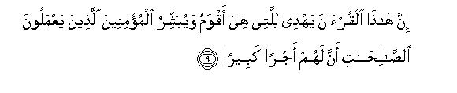
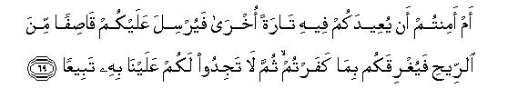
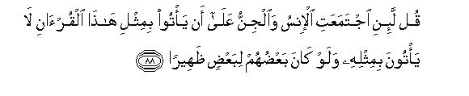

بسم الله الرحمن الرحيم
Sayyid Abul Ala Maududi - Tafhim al-Qur'an - The Meaning of the Qur'an
 17. Surah Al Isra (The Night Journey),
also known as Surah Bani Israil (The Children of Israel)
17. Surah Al Isra (The Night Journey),
also known as Surah Bani Israil (The Children of Israel)
This Surah takes its name (Bani Israil) from v. 4. But this name is merely a distinctive appellation like the names of many other surahs and not a descriptive title, and does not mean that "Bani Isra'il" is the theme of this Sarah.
The very first verse indicates that this Surah was revealed on the occasion of Mi`raj (Ascension). According to the Traditions and books on the life of the Holy Prophet, this event happened one year before Hijrah. Thus, this Surah is one of those which were revealed in the last stage of Prophethood at Makkah.
The Holy Prophet had been propagating Tauhid for the previous twelve years and his opponents had been doing all they could to make his Mission a failure, but in spite of all their opposition, Islam had spread to every corner of Arabia and there was hardly any clan which had not been influenced by his invitation. In Makkah itself the true Believers had formed themselves into a small community and were ready and willing to face every danger to make Islam a success. Besides them, a very large number of the people of Aus and Khazraj (two influential clans of Al-Madinah) had accepted Islam. Thus the time had come for the Holy Prophet to emigrate from Makkah to Al- Madinah and there gather together the scattered Muslims and establish a state based on the principles of Islam.
These were the conditions when Mi`raj took place and on his return the Holy Prophet brought down the Message contained in this Surah.
This Surah is a wonderful combination of warning, admonition and instruction, which have been blended together in a balanced proportion.
The disbelievers of Makkah had been admonished to take a lesson from the miserable end of the Israelites and other communities and mend their ways within the period of respite given by Allah, which was about to expire. They should, therefore, accept the invitation that was being extended by Muhammad (Allah's peace be upon him) and the Quran. Otherwise they shall be annihilated and replaced by other people. Incidentally, the Israelites, with whom Islam was going to come in direct contact in the near future at Al-Madinah have also been warned that they should learn a lesson from the chastisements that have already been inflicted on them. They were warned, "Take advantage of the Prophethood of Muhammad (Allah's peace be upon him) because that is the last opportunity which is being given to you. If even now you behave as you have been behaving, you shall meet with a painful torment."
As regards the education of mankind, it has been impressed that human success or failure, gain or loss, depends upon the right understanding of Tauhid, life-after- death and Prophethood. Accordingly, convincing arguments have been put forward to prove that the Quran is the Book of Allah and its teachings are true and genuine the doubts of the disbelievers about these basic realities have been removed and on suitable occasions they have been admonished and rebuked in regard to their ways of ignorance.
In this connection, those fundamental principles of morality and civilization on which the Islamic System of life is meant to be established have been put forward. Thus this was a sort of the Manifesto of the intended Islamic state which had been proclaimed a year before its actual establishment. It has been explicitly stated that that was the sketch of the system on which Muhammad (Allah's peace be upon him) intended to build human life first in his own country and then in the outside world.
Besides these, the Holy Prophet has been instructed to stick firmly to his stand without minding the opposition and difficulties which he was encountering and should never think of making a compromise with unbelief. The Muslims who sometimes showed signs of impatience, when they met with persecution, calumny, and crooked arguments, have also been instructed to face adverse circumstances with patience and fortitude and keep full control over their feelings and passions. Moreover, salat was prescribed in order to reform and purify their souls, as if to say, "This is the thing which will produce in you those high qualities of character which are essential for everyone who intends to struggle in the righteous way Incidentally, we learn from Traditions that Mi'raj was the first occasion on which the five daily Prayers were prescribed to be offered at fixed times.

In the name of Allah, the Compassionate, the Merciful.
[1] Glory be to Him, Who transported His Servant one night from the Masjid-i-Haram to the distant Temple, whose surroundings We have blessed, so that we might show him some of Our Sings:1 the fact is that He alone is All-Hearing and All-Seeing.

[2-8] Before this We had given the Book to Moses and made it a means of guidance for the Israelites2 with this Command: "Do not make .any other guardian than Myself.3 You are the descendants of those whom We bore in the Ark with Noah,4 and he was truly a grateful servant". Besides this, We forewarned the Israelites in the Scriptures:5 You will work great mischief twice in the land and will become overbearingly arrogant.6 When the occasion of the first of the two mischiefs came, O Israelites, We raised against you such of Our servants who were very mighty and formidable; so they penetrated through all parts of your country. This was a warning that was bound to be fulfilled.7 Then after this We afforded you an opportunity to over-power them and helped you with abundance of riches and children and increased you far more in numbers than before.8 Behold! If you did good it proved to be good for yourselves and if you committed evil it proved to be bad for your own selves. Then, when the time came for the fulfillment of the second warning, We set other enemies on you so that they might disfigure your faces and enter into the Temple just as the former enemies had entered and destroyed whatever they could lay their hands on.9 Now again your Lord may show compassion on you; but if you again repeat your former behavior; We will again visit you with. Our punishment, for We have prepared Hell to serve as a prison-house for the ungrateful people.10

[9-10] Indeed the Qur'an shows that way which is perfectly straight: To those who believe in it and do good deeds, it gives the good news that there is a great reward for them and to those who do not believe in the Hereafter, it gives the warning that a painful torment has been made ready for them.11
[11] Man invokes evil instead of goodness for he is very hasty and impatient.12
[12] Behold! We have created day and night as two signs: We have deprived the sign of night of light and made the sign of day bright to enable you to seek bounty of your Lord and to reckon months and years. Thus We have made everything manifestly distinct.13
[13-14] We have fastened the augury of every man to his own neck,14 and on the Day of Resurrection We will bring forth a writing which he will find like an open book. (It will be said to him,) "Here is your record: read it. Today you yourself suffice as reckoner against yourself."

[15] Whosoever adopts the righteous way, his righteous conduct will be for his own good, and whosoever goes astray, his deviation shall bring its consequences on him.15 No bearer will bear the burden of another.16 And We do not inflict punishment until We have sent a Messenger17 (to make Truth distinct from falsehood.)
[16-17] When We decree that a habitation should be destroyed, We give Commands to its well-to-do people and they show disobedience; then that habitation incurs just torment and We totally exterminate it.18 Just see how many generations have been destroyed by Our Command after Noah. Your Lord is fully aware of the sins of his servants and is seeing everything.
[18-21] If a person hankers after the immediate good things of this worldly life,19 We give him whatever We will; then We condemn such a one to Hell, wherein he will burn, accursed and deprived of mercy.20 On the other hand, whoso desires the life of the Hereafter and strives for it as best as one should strive, and is a believer, the endeavor of every such person will be appreciated.21 As regards the provisions of this worldly life, We bestow them on these and on those; this is a gift of your Lord and there is none to withhold the gift of your Lord.22 But in spite of this you can see that We have exalted one people above the others and in the Hereafter these grades will be far greater, and their superiority will be far higher.23
[22] Do not associate another deity with Allah,24 otherwise you shall he reduced to a state of ignominy and helplessness.
[23-24] Your Lord has enjoined the following:25
1. You should not worship anyone but Him.26
2. Treat your parents with great consideration; if either or both of them live with you in their old age, do not say even "fie" to them: nor rebuke them, but speak kind words to them; treat them with humility and tenderness and pray: "Lord, be merciful to them just as they brought me up with kindness and affection."
[25-27] Your Lord best knows what is in your minds. if you live righteously, He surely forgives and turns towards all such people as are penitent and obedient.27
3. Fulfill your obligations towards your relatives and the indigent and the wayfarer.
4. Do not be a spendthrift because the spendthrifts are the brethren of Satan and Satan has been ungrateful to his Lord.
[28] 5. If you have to put them (the needy persons) off because you are still waiting for Allah's favor that you are expecting, put them off with tenderness.28
[29-30] 6. Do not tie your hand to your neck nor stretch without any restraint lest you should become blameworthy and left destitute.29 Your Lord provides plentifully to whom He wills and withholds His provisions from anyone He pleases, for He is fully aware of the condition of His servants and observes them closely.30
[31] 7. Do not kill your offspring for fear of want: for it is We Who provide them and you as well. Indeed their killing is a heinous crime.31

[32] 8. Do not even go near fornication for it is a very indecent flung and a very evil way.32
[33] 9. Do not kill any soul whose killing has been forbidden by Allah33 except by right:34 and if one is killed unjustly We have granted the right of retribution to his guardian.35 So he should not transgress the limits in retaliation,36 for he shall be helped.37
[34-35] 10. Do not go near the property of an orphan except in the best manner until he reaches the age of maturity.38
11. Keep your pledges, for you shall be accountable for your pledges.39
12. Give full measure when you measure and weigh with even scales40 when you weigh. This is the best way and will prove to be the best in the end.41

[36] 13. Do not follow that of which you have no knowledge for you shall be questioned for (the use) of your eyes, ears and minds.42
[37] 14. Do not strut about in the land for you can neither cleave the earth nor attain the height of the mountains.43

[38-40] The evil aspect of each of these Commandments is odious in the sight of your Lord.44 These are the things of wisdom which your Lord has revealed to you.
And behold! do not associate any other deity with Allah lest you should be cast into Hell reproached and deprived of every good45 What! has your Lord favored you with sons and adopted angels as daughters for Himself?46 Indeed it is a big lie that you are uttering.
[41-44] We have admonished the people in different ways in the Qur'an so that they may take warning, yet they are running further and further away from the Truth. O Muhammad, tell them that if there had been other deities beside Allah, as they assert, they would surely have tried to find a way to (dethrone) the Master of the Throne.47 He is free from and far above the things they say about Him. The seven heavens and the Earth and all the things therein48 are chanting hymns of His glory49 along with His praise but you do not understand their hymns. The fact is that He is very Forbearing and Forgiving.50
[45-48] When you recite the Qur'an, we place an invisible curtain between you and those who do not believe in the Hereafter and we cover their hearts with a covering so that they understand nothing and we make their ears hard of hearing.51 And when in the Qur'an you mention your one Lord only, they turn their faces away in aversion.52 We know best what they really wish to hear, when they listen to you, and also what they say, when they sit together in secret conversation. These wrongdoers say to one another, "The man you are following is really bewitched"53 Behold! what epithets they apply to you! They have gone astray, so they cannot find the Right Way.54

[49-52] They say, "What! shall we really be raised up again into a new creation, when we are reduced to bones and dust?" Say to them, ("yes, most certainly you shall be brought back to life,) even if you be stone or iron or even something harder than this which you consider in your minds impossible to be brought to life." At this they will ask, "Who is he who will bring us back to life?" Say to them, "The same Being Who brought you to life in the first instance." Then they will shake their heads at you and ask.55 "Well, when will this happen?" Say, "That time may be near at hand. On the Day when He will call you, you will rise up in response to it, praising Him, and you will think, "We have remained in this state only for a little while."56


[53-54] And O Muhammad!, say to My servants,57 "They should utter only that which is the best of all.58 In reality, it is Satan who tries to sow discord between human beings. The fact is that Satan is the avowed enemy of man.59 Your Lord is fully aware of everything concerning you. If He will, He may show mercy to you, and if He will, He may give you severe chastisement."60 And, O Prophet, We have not sent you to be the guardian over people.61
[55] Your Lord is fully aware of all the creatures in the heavens and the earth. We have exalted some Prophets above the others in ranks,62 and We gave the Psalms to David.63
[56-57] Say to them, "You may invoke for help those deities whom you consider to be (your helpers) beside Allah: They will not be able to relieve you of any trouble nor change it."64 In fact those whom these people invoke for help themselves seek means of approach to their Lord and vie with one another to be nearer to Him and hope for His mercy and fear His chastisement.65 The fact is that the chastisement of your Lord is a thing to be dreaded.
[58] There is no habitation which We shall not destroy before the Day of Resurrection or punish with a severe chastisement.66 This has been ordained in the Eternal Record.
[59-60] And nothing has hindered Us from sending Signs67 except that the former people refused to acknowledge them as such. (For example,) We sent the She-camel as an open Sign to Thamud but they treated her with cruelty;68 whereas We send Signs only by way of warning.69 Call to mind, O Muhammad! We told you at the very beginning that your Lord is encircling these people.70 And We made what We have shown you now71 and also the Tree which has been cursed in the Qur'an72 as a trial for these people." We are giving them warning after warning but each warning helps only to increase their insurrection.73
[61-65] And remember: when We commanded the angels, "Bow yourselves before Adam," all bowed down except Iblis.74 He replied, "Should I bow before the one whom you have created of clay?" Then he added, "Just consider this: Was he worthy of this that you have exalted him over me ? If you give me respite up to the Day of Resurrection, I will uproot the whole of his progeny;75 there shall be only a few of them who will be able to save themselves from me." Allah replied, "Well, get away. Hell is your ample reward and the reward of those who follow you. You may try to allure with your invitation whomsoever you can.76 Rally against them your horsemen and your footmen:77 set a partner with them in their wealth and children78 and entice them with your false promises And Star's promises are nothing but deception.79 Indeed you will have no power over my servants."80 And your Lord suffices for you as a guardian.81

[66-68] Your (real) Lord is the One, Who drives your ship across the sea82 so that you may seek His bounty.83 The fact is that He is very merciful towards you. When a misfortune befalls you on the sea, all of those whom you invoke for help fail you but He (is there to help you84 ): yet when He brings you safe to land, you turn away from Him. Indeed man is very ungrateful. What, do you feel quite secure that sometimes Allah would not cause you to sink underground even on land, or send a deadly whirlwind charged with stones toward you, and you may not find anyone to protect you from it?

[69-72] Or, are you not afraid that God may again send you to the sea and smite you with a violent tempest and drown you for your ingratitude, and you may not find any one to question Us in regard to this end of yours? It is a favor that We have honored the sons of Adam and blessed them with conveyances on land and sea and provided them with good and pure things and exalted them above many of Our other creatures.85 Just imagine the scene on the Day, when We will summon every community with its leader: then those, who will be given their records in their right hands, will read their records86 and will not be wronged in the least; on the other hand, the one, who leads his life in this world as if he were blind shall be blind in the Hereafter. nay, he shall fare even worse than a blind person in finding the way.

[73-75] O Muhammad these people have left no stone unturned to tempt you away from that which We have revealed to you so that you might fabricate something in Our name.87 Had you done that, they would have made you their friend. It was just possible that you might have inclined a little towards them, if We had not given you strength. But if you had done so, We would have made you taste double chastisement in this world as well as in the Hereafter: then you would have found no helper against Us.88
[76] And these people have persistently been trying to uproot you from this land and exile you from it, but if they do so, they will not be able to stay here much longer.89
[77] This has always been our Way with the Messengers whom We sent before you.90 and you will find no change in Our way.

[78-79] Establish Salat91 from the declining of the sun92 to the darkness of the night,93 and be particular about the recital of the Qur'an94 at the dawn of the morning, for the recital of the Qur'an at the dawn is witnessed.95 Besides this, offer Tahajjud Prayer96 at night: this is an additional prayer for you.97 That time is not far when your Lord may exalt you to a laudable position.98
[80] And pray. "Lord, whereto Thou takest me, take me with truth, and where from Thou takest me out cause me to go out with truth:99 and grant me a power from Thee to help me."100
[81] And declare, "The Truth has come and falsehood has vanished: for falsehood is a thing that must by its nature vanish."101
[82-84] We are sending down to you through the revelation of the Qur'an what is a healing and mercy to the Believers, though it adds nothing but loss to the workers of iniquity.102 Man is a (strange) creature: when We bestow favor on him, he behaves arrogantly and turns his back, but when misfortune befalls him, he begins to despair. O Prophet, say to them, "Everyone is following his own way but your Lord alone knows best who is on the right way."
[85] They ask you about "The Spirit."103 Say, "This Spirit comes by the command of my Lord, but you have been given only a little of the Knowledge."


[86-88] O Muhammad, We may, if We so will, take back from you all of what We have revealed to you: then you will find none to help you in getting it back from Us. All that you have received is by the favor of your Lord. Indeed His favor to you is very great.104 Declare this, "Even if human beings and jinns should cooperate with one another to bring forth a book like the Qur'an, they will never be able to bring anything like it, even though all of them help one another."105


[89-93] In this Qur'an, We employed different ways to make the people understand the Message, but the majority of them persisted in unbelief, and they said, "We will not believe in what you say until you cause a spring to gush forth from the earth for us, or a garden of date-palms and vines be created for you, and you cause canals to flow in it; or until you cause the sky to fall on us in fragments, as you threaten us; or you bring Allah and the angels face to face before us or a house of gold comes into being for you or you ascend the sky, and we are not going to believe in your ascension until you bring down to us a writing that we may read"O Muhammad, Say to them, "My Lord be glorified! have I ever claimed to be anything more than a human Messenger?"106
[94-95] Whenever Guidance came before the people nothing prevented them from believing in it except this (excuse): they said: "Did Allah send a human being as His Messenger?"107 Say to them, "Had angels settled on the Earth and moved about in peace, We would certainly have sent an angel as a Messenger to them."108
[96] O Muhammad, say to them, "Allah suffices for a witness to judge between you and me: for He is fully aware of and is observing what His servants are doing."109
[97-99] Whomsoever Allah guides, he alone is rightly guided and whomsoever He lets go astray, you will find for such people no other protector and helper besides Him.110 On the Day of Resurrection, We will muster them prostrate upon their faces, blind, dumb and deaf.111 Their abode will be Hell: whenever its fire abates, We will rekindle it for them. This is their recompense, for they rejected Our Signs and said, "What! shall we really be raised up anew, when we have been reduced to bones and dust?" Could they not perceive that the same Allah, Who created the Earth and the Heavens, has the power to create the like of them? He has ordained a time for resurrecting them which shall inevitably come, but these workers of iniquity persist in their disbelief.
[100] O Muhammad, say to them, "Had the treasures of your Lord's blessings been in your possession, you would have held them back lest they should be spent up. Indeed man is very narrow minded."112
[101-104] And We gave to Moses nine Signs which were quite manifest.113 Now you yourself may inquire from the children of Israel about it: when those Signs came before Pharaoh, he uttered these very words: “O Moses, I consider you to be a bewitched man.”114 Moses replied, “You know it full well that none but the lord of the Heavens and the earth had sent down these signs as eye-openers,115 and O Pharaoh, I consider you indeed to be a doomed person.”116 At last Pharaoh resolved to uproot Moses and the Israelites from the land but We drowned him and his followers all together. Then we said to the Israelites, “Now you should settle down in the land117 and when the prescribed time of Resurrection comes about, We will gather all of you together.”
[105-109] We have sent down the Qur'an with the truth and with the truth it has come down; and O Muhammad, We have sent you only to give good news (to the Believers) and warning (to the disbelievers).118 And we have sent down this Qur'an piecemeal so that you may recite it to the people gradually piece by piece, and We have sent it down by gradual Revelations119 (to suit particular occasions).O Muhammad, say to these people, “Whether you believe in it or not, those who were given the knowledge before this,120 fall prostrate on their faces when it is recited to them and cry out, “Our lord is glorious and His promise was surely to be fulfilled.” And they fall down on their faces, weeping when they listen to it, and this increases their Humility121 all the more.122

[110-111] O Prophet, say to them, “You may call Him by any name, Allah or Rahman, for it is all the same by whichever name you call Him because all His names are most excellent.123 And do not raise your voice high in your Prayer nor make it very low but adopt the middle way124 between these two and say, “Praise is for that Allah who has begotten no son nor has any partner in His Kingdom nor is helpless to need any supporter,”125 And glorify Him in the most glorious way.”
1The event referred to in this verse is known "Mi`raj" and "Isra"'. According to authentic traditions, this took place a year before Hijrah. In the traditional and biographical literature, its details have been related by a large number (25) of the Companions. Anas bin Malik, Malik bin Sa`asa`ah, Abuzar Ghifari, and Abu Hurairah (Allah be pleased with them all) have related details of the event. Besides them, `Umar, `Ali, `Abdullah bin Mas`ud...........(Allah be pleased with them) have also related some parts of this event.
In this verse, the Qur'an mentions only a part of the Journey, i.e., from Masjid-i-Haram to the Temple at Jerusalem. The object of this journey as stated here was that Allah willed to show His servant some of His signs. The Qur'an does not give any details other than this but we find further details in the traditions, which are to this effect:
One night the Angel Jibril transported the Holy Prophet on al-Buraq from Masjid-i-Haram to Masjid-i-Aqsa (the Temple). There the Holy Prophet offered his prayers along with the other Prophets. Then he took him towards the higher spheres, where he met some of the great Prophets in different spheres. At last he reached the Highest Place in the Heavens, and was received in audience by Allah. It was there that besides other important instructions five daily Prayers were prescribed. Then he returned to the Temple and from there came back to Masjid-i-Haram. During this Journey, according to many traditions, Paradise and Hell were shown to him. We also learn from authentic traditions that on the following day when he mentioned this event, the disbelievers of Makkah scoffed at him, and some of the Muslims also were skeptical about this.
The above additional details based on the traditions cannot be said to be against the Qur'an, for these are additions to the details given in the Qur'an; therefore, the details related in the traditions cannot be. rejected on the plea that they are against the Qur'an. Nevertheless, if one rejects any part of those details which are given in the traditions, one cannot be declared a renegade. On the other hand, if one rejects the details given in the Qur'an, one does become a renegade.
There are different versions of this Journey. Some say that this happened in a dream, while others are of the opinion that the Holy Prophet was fully awake and went on the Journey with his own physical body; some others say that it was merely a mystic vision which was shown to him. The opening words of this verse: "Glory be to Him, who transported His Servant..." however, clearly show that it was a super-natural event which was brought about by the unlimited power of Allah. It is quite obvious that if the event had been merely a mystic vision, it would not have been introduced by the words which imply that the Being Who brought about this event is free from each and every kind of weakness and defect. Again the words "transported His servant one night" also show that this was not a dream or a vision but a physical journey in which Allah arranged that the Holy Prophet should make observation of His Signs with his physical eyes. Therefore, one is bound to admit that this was not a mere spiritual experience but a physical journey and visual observation which Allah arranged for His Prophet.
It is strange that some people are of the opinion that this extraordinary journey could not be possible, but now when man with his limited-very limited power has been able to reach the moon, it is absurd to deny that Allah with His limitless powers could enable His Messenger to make this journey in the extraordinary short time it took.
Above all, the question whether a thing is possible or not, can arise only in the `case of human beings whose powers are after all limited, but such questions cannot be raised where the All-Powerful Allah is concerned. Only such a person who does not believe that Allah is able to do everything can raise objections against this wonderful Journey about which Allah Himself says that He transported His Servant one night from Masjid-i-Haram to Masjid-i-Aqsa. Likewise all the objections raised against the various details which are given in the traditions are frivolous, except two, which are plausible:
First, if we accept these details, then we shall have to admit drat Allah is confined to a certain place: otherwise there was no need that His Servant should be transported for this purpose to a certain place. Secondly, according to traditions, the Holy Prophet was enabled to observe Paradise and Hell where he saw some people suffering from torment. The objection is: why should sane people be awarded punishments or rewards before the Final Judgment after Resurrection?
As regards the first objection, it is true that Allah is Infinite by Himself, but in dealing with His creation, He employs those means which suit His imperfect creation not because of any limitation of His, but because of the limitations of His creation. For instance, when He speaks to any of His creature, He adopts the same limited mode of conversation as the addressee can understand, though He has limitless modes of speech. Likewise, when He desires to show some of the wonderful Signs of His Kingdom to a servant. He transports him to the place where the' Signs are to be shown. It is obvious that the servant cannot see at one and the same time the whole of the universe as Allah does, for Allah has no need to go to any place at all for this purpose but the servant has. The same applies to the appearance of the servant before the Creator. Though Allah is not confined to any locality, it is necessary for the servant to go to the place where His manifestations have been concentrated for his observation because it is not possible for the servant with his limited powers to go in His Presence in His Infinite Capacity.
As regards the second objection, it is based on the lack of understanding the thing: many of the Signs which were shown to the Holy Prophet were symbolical. For instance, a small hole from which a fat ox came out but could not go back into it, represented mischief personified. In the same way the adulterers were shown as if they had fresh meat before them but instead of that they were eating rotten flesh. Similarly punishments for evil deeds shown to him were only symbolic observations of the punishments in the Hereafter so that he might see in advance the things which would take place in the Hereafter.
In regard to the Mi `raj it should be kept in view that all the Prophets were enabled by Allah to see His Signs in the heavens and the earth according to their ranks. And for this purpose all the material curtains were lifted so that they could see with their naked eyes the unseen realities, to which they were required to invite the people.
This was done so that the Prophets could say with full conviction what they had seen with their own eyes. For this experience would distinguish there from a philosopher who bases all his theories on guess-work and cannot say that he bears witness to what he claims. In contrast to philosophers, Prophets could say that they bore witness to the things which they presented because they had seen them with their own eyes.
2As this verse has no apparent connection with the event of Mi'raj, it may appear to a cursory reader that either of the two verses has been misplaced here. But if we try to understand the matter in the context of the theme of the whole Surah, we can easily understand the connection between the two. .The main object of this Surah is to give a warning to the disbelievers of Makkah. That is why the mention of Mi`raj has been made in the very first verse, as if to say, "The person whom you dub as an impostor and reject the Book sent down to him, has just now seen with his naked eyes great Signs of Allah. So you should learn a lesson from the history of the Israelites who discarded the Book of Allah and therefore, were given painful punishment."
3The Arabic word "vakil" (guardian) denotes a person who is trustworthy and can be depended upon in regard to one's affairs and may be turned to for guidance and help.
4That is, "You are the descendants of Noah and his companions;" therefore ,you should behave in a manner as behooves such people. You should make Allah alone your Guardian, for your ancestors escaped death from the flood only because they had made Allah their Guardian."
5The original Arabic word "Al-kitab"does not stand here for the Torah but for all the Divine Books.
6Such warnings have been given in different Books of the Bible. As regards their first mischief and its evil consequences, the Israelites were warned in the Psalms, Isaiah, Jeremiah and Ezekiel and the warnings about their second mischief and its severe punishments are found in Matthew and Luke. Below are given extracts to confirm this statement of the Qur'an.
Prophet David was the first to warn the Israelites in his Psalms of their first mischief:
"They did not destroy the nations, concerning whom the Lord commanded them: But were mingled among the heathen, and learned their works. And they served their idols which were a snare unto them. Yea, they sacrificed their sons and their daughters unto devils, And shed innocent blood, even the blood of their sons and of their daughters ....Therefore, was the. wrath of the Lord kindled against his people, insomuch that he abhorred his own inheritance. And he gave them into the hand of the heathen;" Psalms: Chapter 106, vv. 34-38, 40; 41. The above events have been described in the past tense as if they had already actually happened. The Scriptures employ this mode of expression to emphasize the importance of the prophesies.
When this mischief actually carne to pass, Prophet lsaiah warned them of its ruinous consequences: "Ah sinful nation, a people laden with iniquity, a seed of evil-doers, children that arc corrupters: they have forsaken the Lord, they have provoked the Holy One of Israel unto anger, they are gone away backward. Why should ye be stricken any more? ye will revolt more and more: How is the faithful city become an harlot! it was full of judgment; righteousness lodged in it; but now murderers. Thy princes are rebellious, and companions of thieves: everyone loveth gifts, and followeth after rewards: they judge not the fatherless, neither doth the cause of the widow come unto them. Therefore, saith the Lord, the Lord of hosts, the mighty One of Israel. Ah I will case me of mine adversaries, and avenge me of mine enemies: they be replenished from the east, and are soothsayers like the Philistines, and they please themselves in the children of strangers. Their land also is full of idols; they worship the work of their own hands, that which their own fingers have made: Moreover the Lord saith, Because the daughters of Zion are haughty, and walk with stretched forth necks and wanton eyes, walking and mincing as they go, and making a tinkling with their feet: Therefore, the Lord will smite with a scab the crown of the head of the daughters of Zion, and the Lord will discover their secret parts. Thy men shall fall by the sword, and thy mighty in the war. And her gates shall lament and mourn: and she being desolate shall sit upon the ground. Now therefore, behold, the Lord bringeth up upon them the waters of the river, strong and many, even the king of Assyria, and all his glory: and he shall come up over all his channels, and go over all his banks: That this is a rebellious people, lying children, children that will not hear the law of the Lord: Which say to the seers, See not; and to the prophets, Prophesy not unto us right things, speak unto us smooth things, prophesy deceits: Wherefore thus saith the Holy One of Israel, Because ye despise this word, and trust in oppression and perverseness, and stay thereon: Therefore, this iniquity shall be to you as a breach ready to fall, . . . . And he shall break it as the breaking of the potters' vessel that is broken in pieces; he shall not spare: so that there shall not be found in the bursting of it a shred to take fire from the hearth, or to take water withal out of the pit." (lsaiah, Chapter 1:verses 4-5; 21-24,Chapter 2:verses 6,8; Chapter 3: verses 16-17, 25-26; Chapter 8: verse 7; Chapter 30: verses 9-10, 12-14.)
After this Prophet Jeremiah raised his voice when the flood of corruption swept away everything before it.
"Thus saith the Lord, What iniquity have your fathers found in me, that they are gone far from me, and have walked after vanity and are become vain?
And I brought you into a plentiful country to eat the fruit thereof and the goodness thereof; but when ye entered, ye defiled my land, and made my heritage an abomination. For of old time I have broken thy yoke, and burst thy hands: and thou saidst, I will not transgress; when upon every high hill and under every green tree thou wanderest,,playing the harlot. As the thief is ashamed when he is found. so is the house of Israel ashamed: they, their kings, their princes, and their priests, and their prophets, Saying to a stock, Thou art my father; and to a stone, Thou hast brought me forth: for they have turned their back unto me, and not their face but in the time of their trouble they will say, Arise, and save us. But where are thy gods that thou hast made thee? let them arise, if they can save thee in the time of thy trouble; for according to the number of thy cities are thy gods, O Judah. The Lord said also unto me in the days of Josiah the king, Hast thou seen that which backsliding Israel hath done? She is gone up upon every high mountain and under every green tree, and there hath played the harlot. And her treacherous sister Judah saw it. And I saw, when for all the causes whereby backsliding Israel committed adultery I had put her away, and given her a bill of divorce; yet her treacherous sister Judah feared not, but went and played the harlot also. And it came to pass through the lightness of her whoredom, that she defiled the land, and committed adultery with stones and with sticks. Run ye to and fro through the streets of Jerusalem, and see now, and know, and seek in the broad places thereof, if can find a man, if there be any that executeth judgments that seeketh the truth; and I will pardon it. How shall I pardon thee for this? thy children have forsaken me, and sworn by them that are no gods: when I had fed them to the full, they then committed adultery, and assembled themselves by troops in the harlots' houses. They were as fed horses in the morning: every one neighed after his neighbor's wife. Shall I not visit for these things? Saith the Lord: and shall not my soul be avenged on such a nation as this? Lo, I will bring a nation upon you from far, O house of Israel, saith the Lord: it is a mighty nation, it is an ancient nation, a nation whose language thou knowest not, neither understand what they say. Their quiver is an open sepulchre, they arc all mighty men. And they shall eat up thine harvest, and thy bread, which thy sons and thy daughters should cat: they shall cat up thy flocks and thine herds; they shall eat up thy vines and thy fig trees: they shall impoverish thy fenced cities, wherein thou trustedst, with the sword. And the carcases of this people shall be meat for the fowls of the heaven, and for the beasts of the earth; and none shall fray them away. Then will I cause to cease from the cities of Judah, and from the streets of Jerusalem, the voice of mirth and the voice of gladness, the voice of- the bridegroom and the voice of the bride: for the land shall be desolate.
And it shall come to pass, if they say unto thee, Whither shall we go forth? then thou shalt tell them, Thus saith the Lord; Such as are for death, to death; and such as are for the sword, to the sword; and such as are for the famine, to the famine; and such as are for the captivity, to the captivity. And I will appoint over them four kinds, saith the Lord: the sword to slay, and the dogs to tear, and the fowls of the heaven, and the beasts of the earth, to devour and destroy." (Jeremiah, Chapter 2: verses 5-7, 20, 26-28; Chapter 3: verses 6-9; Chapter 5: verses 1,7-9 15-17; Chapter 7: verses 33, 34; Chapter 15: verses 2, 3.)
Then Prophet Ezekiel was raised to warn them in time. Addressing Jerusalem he said:
The city sheddeth blood in the midst of it, that her time may come, and maketh idols against herself to defile herself. Behold, the princes of Israel, every one were in thee to their power to shed blood. In thee they have set light by father and mother: in the midst of thee have they dealt by oppression with the stranger: in thee have they vexed the fatherless and the widow. Thou hast despised mine holy things, and hast profaned my Sabbaths. In thee are men that carry tales to shed blood: and in thee they eat upon the mountains: in the midst of thee they commit lewdness. In thee have they discovered their fathers' nakedness: in thee have they humbled her that was set apart for pollution. And one hath committed abomination with his neighbor's wife; and another hath lewdly defiled his daughter-in-law; and another in thee hath humbled his sister, his father's daughter. In thee have they taken gifts to shed blood; thou hast taken usury and increase, and thou hast greedily gained of thy neighbors by extortion and hast forgotten me, can thine hands be strong, in the days that I shall deal with thee? And I will scatter thee among the heathen, and disperse thee in the countries, and will consume thy filthiness out of thee. And thou shalt take thine inheritance in thyself in the sight of the heathen, and thou shalt know that I am the Lord." (Ezekiel, Chapter 22: verses 3, 6-12, 14-16.)
Besides the above mentioned warnings which were given to Israelites at the time of their first mischief, Prophet Jesus Christ warned them of the consequences of their second' great mischief. In a forceful address he criticized their morel degeneration like this:
"O Jerusalem, Jerusalem, thou that killest the prophets, and stonest them which are sent unto thee, how often would I have gathered thy children together, even as a hen gatherth her chickens under her wings, and ye would not! Behold, your house is left unto you desolate. Verily I say unto you, There shall not be left here one stone upon another, that shall not be thrown down. " (Matthew, Chapter 23: verses 37, 38; Chapter 24: verse 2. )
Then, when the Roman officials were taking Prophet Jesus out for crucifixion, and a great company of people including women were following him bewailing and lamenting, he addressed them and gave his final warnings:
But Jesus turning unto them said, Daughters of Jerusalem, weep not for me, but weep for yourselves, and for your children. For, behold, the days are coming, in which they shall say; Blessed are the barren, and the wombs that never bore, and the paps which never gave suck. Then shall they begin to say to the mountains, Fall on us; and to the hills, Cover us. (Luke, Chapter 23: verses 2830. )
7This refers to the terrible destruction that the Israelites suffered at the hands of the Assyrians and Babylonians. One cannot fully appreciate the historical background of this merely from the extracts that have been reproduced above from the Books of the Prophets. A brief history of the Israelites is also needed so that a student may become acquainted with all the causes and circumstances on account of which Allah removed this nation, that professed to believe in a revealed Book, from the leadership of mankind and turned it into a humiliated, condemned and backward community.
When, after the death of Prophet Moses, the Israelites entered Palestine it was inhabited by the Hittites, Amorites, Canaanites, Perizzittes, Hivites, Jebusites, the Philistines, etc. These communities had adopted the worst kind of idolatry, their supreme deity being Ayl whom they regarded as the father of gods and who was usually represented by the bull-images. His consort was called Asherah from whom had descended a whole line of gods and goddesses, about 70 in number. The most powerful god among them was Baal who was regarded as the god of rain and growth and the lord of the earth and heavens. In the northern regions his consort was called Anathoth and in Palestine Ashtaroth. These two were the goddesses of love and procreation. Besides them, there was a god of death, a god of disease and famine, and a goddess of health, and thus all the worldly powers and agencies stood divided among a large number of deities. The people had ascribed such dirty and base qualities and acts to these deities that even a worst offender against morality would shun being known by them. Obviously the people who have adopted such mean deities for worship and devotion cannot remain secure from the worst kind of moral degeneration and the modern excavations have shown this conclusively.
Child sacrifice was a common thing among them. Their places of worship had turned into brothels, where women were kept as religious prostitutes and illicit relations with them were regarded as a part of worship and devotion.
The Israelites had clearly been told in the instructions given in the Torah that they should destroy those communities and wrest the land of Palestine from them, and that they should avoid mixing up with those people and ward off their moral and ideological weaknesses:
But when the Israelites entered Palestine they set this guidance aside. They not only did not establish a united kingdom of their own but fell a prey to tribal parochialism. Each of their tribes was content to take a part of the captured land and become a separate and independent state. This disunity among them did not leave any of the tribes strong enough to purge its territory completely of the idolaters, and therefore they had to allow them to live side by side with them in the same land. Not only this, but there had remained in the conquered territories a cumber of small city states of these idolatrous communities which the Israelites had nor been able to subjugate. It is this very thing which has been complained against in the extract of the Psalms reproduced above in the beginning of E.N. 6.
The first consequence of intermixing with those communities, was that the Israelites also became idolatrous, and gradually began to adopt other moral evils also. This has been complained about in the Book of Judges as below: "And the children of Israel did evil, in the sight of the Lord, and served Baalim: And they forsook the Lord God of their fathers, which brought them out of the land of Egypt, and followed other gods, the gods of the people that were round about them, and bowed themselves unto them, and provoked the Lord to anger. And they forsook the Lord, and served Baal and Ashtaroth". (Judges, 2: 11-13.)
The second consequence suffered by the Israelites was that the communities whose city-states they had left unconquered and the Philistines whose land they had not at all touched set up a united front against them and drove them out of a major part of Palestine by incessant attacks, so much so that they deprived them of the Holy Ark of their Lord. At last, the Israelites felt the need of Establishing a united kingdom of their own under one ruler, and on their request Prophet Samuel appointed Saul as their king in 1020 B.C. (For details see vv. 246-48 and E.N.'s. 268-270 of AI-Baqarah.)
This united kingdom was ruled by three kings: Saul (1020 B.C. to 1004. B.C.), Prophet David (1004 to 965 B.C.) and Prophet Solomon (365 to 926 B.C.). These kings brought to completion the mission that had been left incomplete by the Israelites after the death of Prophet Moses. They annexed all the territories except the Phoenician state on the northern and the Philistine state on the southern coast, which, of course, became tributaries.
After the death of Prophet Solomon the Israelites again adopted the ways of the world and fought among themselves and split into two independent kingdoms, the kingdom of Israel in the northern Palestine and Jordan with Samaria ,as its capital, and the kingdom of Judah in the southern Palestine and Edom with Jerusalem as its capital. These kingdoms were strife-ridden from the very . beginning and this state of affairs persisted till the end.
The rulers and people of the kingdom of Israel were the first to be affected grievously by the ideological and moral weaknesses of the neighboring communities. Specially after the marriage of its ruler, Ahab, with the idolatrous princess Jezebel of Zidon, idolatry and other evils began to spread unchecked among the Israelites under the official patronage. Prophets Elias and Elisha tried their very best to check this deluge but the Israelites who were rapidly degenerating, did not heed their warning. At last the wrath of Allah overtook the kingdom of Israel in the shape of the Assyrians who started subjecting Palestine to incessant attacks from 900 B.C. downward. During this period, Prophet Amos (787-747 B.C.) and them Prophet Hosea(747-735 B.C.) rose and warned the Israelites again and again but the wretched, depraved people did not heed their warnings at all, and transgressed all limits. Prophet Amos was banished by the king of Israel from the realm of Samaria and warned not to preach his mission in the country Not very long after this the wrath of Allah burst upon the kingdom of Israel and its people. The Assyrian king Sargon took Samaria in 721 B.C.and put an end to this northern kingdom. Thousands of Israelites were put to the sword and 27 thousand of their leading men were driven out of their homeland and scattered in the eastern districts of the Assyrian empire and replaced by settlers from other parts of the empire. When the remaining Israelites intermixed with the settlers they also lost gradually their national and cultural identity.
The other kingdom of the Israelites, called the kingdom of Judah, which was set up in southern Palestine also began to adopt godless ways soon after the death of Prophet Solomon, though its moral degeneration took place at a slower pace than that of Israel. Therefore, it was allowed to exist for a longer period. Then, like the kingdom of Israel, it also began to be subjected to continual attacks, its cities ruined and its capital besieged, but this kingdom could not be wholly destroyed by the Assyrians; it only became a tributary. Afterwards, when in spite of the best reformatory efforts of Prophets Isaiah and Jeremiah the people of Judah did not give up idol-worship and other moral evils, king Nebuchadnezzar of Babylon attacked and captured the whole of Judah in 598 B.C. including Jerusalem and took the king of Judah as prisoner. Even then the Israelites did not mend their ways and paid no heed to the warnings and guidance of Prophet Jeremiah: Instead of reforming their ways, they started making plans to change their fate by revolting against Babylon. At last in 587 B.C. Nebuchadnezzar punished them heavily by invading Judah and destroyed all its important cities. He razed Jerusalem and Solomon's Temple to the ground and did not leave a wall of it standing in place. He drove a large part of the Israelite population out of their land and scattered them into the adjoining countries. The people who were left behind were cursed and subjected to all kinds of humiliations by the neighboring communities.
This was the first calamity that came as a warning to the Israelites and the first chastisement that they suffered as a result therof.
8This refers to the lease of time that the Israelites (That is the people of Judah) got after their release from the captivity of Babylon. As for the people of Israel and Samaria, they did not rise again after their moral and spiritual degeneration. But among the people of Judah there still were some people who practiced the truth and invited others also to follow it. They carried on their work of invitation to the truth among the remaining Israelites in Judah and exhorted those also to repent and follow the truth who had been driven out into Babylon and other lands. At last the mercy of Allah came to their help. The downfall of Babylon started. The Persian king, Cyrus, took Babylon in 539 B.C. and in the following year issued a decree allowing the Israelites to return to and re-settle in their homeland. The Israelites began to return home in caravan after caravan, and ties continued for along time. Cyrus also allowed the Israelites to rebuild the Temple of Solomon but the neighboring communities who had settled in this land resisted it. At last Darfius I appointed Zerubbabel, a grandson of the last king of Judah, governor of Judah in 522 B.C. who got the Temple rebuilt under the care of Prophet Haggai, Prophet Zechariah and Joshua. In 458 B.C. Ezra arrived in Judah along with an exiled group and the Persian king Artaxerxes made the following decree.
"And thou, Ezra, after the wisdom of thy God that is in thine hand, set magistrates and judges, which may judge all the people that are beyond the river, all such as know the laws of thy God; and teach ye them that know them not.
And whosoever will not do the law of thy God and the law of the king let judgment be executed speedily upon him whether it be unto death, or to banishment, or to confiscation of goods, or to imprisonment. "(Ezra, 7:25-26).
Taking advantage of this decree, Ezra carried out the revival of the religion of Prophet Moses. He gathered together all the righteous and good people from the Israelites and set up a strong organization. He compiled and spread the Pentateuch which contained the Torah, made arrangements for the religious education of the Israelites, enforced the law and started purging the people of moral and ideological weaknesses which the had adopted by intermixing with the other communities. He compelled they Jews to divorce the idolatrous wives they had married, and took a covenant from them that they would worship God alone and follow His Law only.
In 455 B.C. an exiled group came back to Judah under Nehemiah whom the Persian king appointed as the ruler of Jerusalem and ordered him to build the wall round the city. Thus, after 150 years the Holy city was fully restored and became the center of Jewish religion and culture, But the Israelites of northern Palestine, and Samaria did not benefit by the work of revival done by Ezra. They built a rival sanctuary on Mount Gerizim, and tried to make it the religious center for the people of the Book. This caused a further, and perhaps the final, split Between the Jews and the Samaritans.
The Jews suffered a set-back for a while with the fall of the Persian Empire and the conquests of Alexander the Great and the rise of the Greeks. After the death of Alexander, his kingdom was subdivided into three empires. Syria tell to the lot of the Seleucide empire, with Antioch as its capital, whose ruler Antiochus III incorporated Palestine into his dominions in 198 B.C. These Greek conquerors who were idolatrous by precept and freelance morally felt greatly ill at ease with the Jewish religion and culture. So, they began to propagate the rival Greek way of life and culture by political and economic pressure, and were able to win over a strong section of the Israelites who became their helpers. This external interference caused a split in the Jewish nation. One group among them readily adopted the Greek dress, the Greek language, the Greek way of life and the Greek sports, while the other persistently stuck to their own culture and way of life.
In 175 B.C. when Antiochus IV (who was called Epiphanes, that is, the manifestation of God) came to the throne, he used all his power and authority to stamp out the Jewish religion and culture. He got idols installed in the Holy Temple at Jerusalem and forced the Jews to prostrate themselves before them. He strictly forbade the rite of offering the sacrifices at the altar, and commanded the Jews to offer sacrifices to idolatrous deities instead. He proposed death penalty for those who would keep the Torah in their houses, or observe the Sabbath or perform circumcision of their children. But the Jews did not yield to this coercion, and started a powerful resistance movement, known in history as the revolt of the Maccabees. Though in this struggle the sympathies of the Greece-oriented Jews were with the Greeks, and they fully cooperated with the despots of Antioch to crush the Maccabean revolt, the common Jews who still retained the religious fervor of the days of Ezra sided with the Maccabees, who were ultimately able to drive out the Greeks and establish a free religious state which remained in power till 67 B.C This state prospered and in time extended to all those territories which had once been under the control the kingdoms of Judah and Israel. It was able to annex a part of the land of the Philistines which had remained unconquered even in the days of Prophets David and Solomon (Peace be upon them).
This is the historical background of the verse of the Qur'an under commentary.
9The historical background of the second degeneration and its chastisement is as follows:
The moral and religious fervor with which the Maccabees had started their movement gradually cooled down and was replaced by love of the world and empty external form. A split appeared among them and they themselves invited the Roman General, Pompey, to come to Palestine. Pompey turned his attention to this land in 63 B.C. and, taking Jerusalem, put an end to the political freedom of the Jews. But the Roman conquerors preferred to rule their dominions through the agency of the local chiefs rather than by direct control. Therefore, a local government was set up in Palestine which eventually passed into the hand of Herod, a clever Jew, in 40 B.C. This ruler is well known as Herod the Great. He ruled over the whole of Palestine and Jordan from 40 to 4 B.C. On the one hand Herod patronized the religious leaders to please the Jews, and on the other, he propagated the Roman culture and won the goodwill of Caesar by showing his loyalty and faithfulness to the Roman Empire. During, his reign, the Jews degenerated and fell to the lowest ebb of moral and religious life.
On the death of Herod his kingdom was subdivided into three parts. His son, Archelaus, became the ruler of Samaria, Judea and northern Edom. In A.D. 6. however, Caesar Augustus deprived him of his authority and put the state under his Roman governor, and this arrangement continued up till A.D. 41. This was precisely the time when Prophet Jesus (Peace be upon him) appeared to reform the Israelites whose religious leaders opposed him tooth and nail and even tried to get him the death sentence by the Roman governor, Pontius Pilate.
The second son of Herod, Herod Antipas, became the ruler of Galilee and Jordan in northern Palestine, and he was the person who got Prophet Yahya (John) (Peace be upon him) beheaded at the request and desire of a dancing girl.
Herod's third son, Philip, succeeded to the territories bounded on one side by river Yermuk and on the other by Mount Hermon. Philip had been much more deeply influenced by the Roman and Greek cultures than his father and brothers. Therefore the preaching of the truth could not have even so much effect in his land as it had in the other parts of Palestine.
In A.D. 41, the Romans appointed Herod Agrippa, the grandson of Herod the Great, ruler of the territories that had once been under Herod himself. Coming into power this man did whatever he could to persecute the followers of Prophet Jesus (Peace be upon him) and used all the forces at his disposal to crush the movement that was functioning under the guidance of the Disciples to inculcate fear of God in the people and reform their morals.
In order to have a correct estimate of the condition of the common Jews and their religious leaders, one should study the criticisms leveled by Prophet Jesus on them in his sermons contained in the four Gospels. Even a religious man like Prophet John was beheaded before their eyes and not a voice was raised in protest against this barbarity. Then all the religious leaders of the community unanimously demanded death sentence for Prophet Jesus, and none but a few righteous men were there to mourn this depravity. Above all, when Pontius Pilate asked these depraved people, ' which condemned prisoner he should release, according to the custom, at Passover, Jesus or Barabbas the robber', they all cried with one voice 'Barabbas'. This was indeed the last chance Allah gave to the Jews, and then their fate was sealed.
Not long after this, a serious conflict started between the Jews and the Romans, which developed into an open revolt by the former between A.D. 64 and G6. Both Herod Agrippa II and the Roman procurator Floris failed to put down the rebellion. At last, the Romans crushed it by a strong military action and in A.D. 70 Titus took Jerusalem by force. About 1,33,000 people were put to the sword, 67 thousand made slaves, and thousands sent to work in the Egyptian mines and to other cities so that they could be used in amphitheaters for being torn by wild beasts or become the "practice-target" for the sword fighters. All the tall and beautiful girls were picked out for the army of conquest and the Holy City of Jerusalem and the Temple were pulled down to the ground. After this the Jewish influence so disappeared from Palestine that the Jews could not regain power for two thousand years, and the Holy Temple could never be rebuilt.. Afterwards the Roman Emperor, Hadrian, restored Jerusalem but renamed it Aelia. The Jews, however, were not allowed to enter it for centuries. This was the calamity that the Jews suffered on account of their degeneration for the second time.
10Though this admonition has been given as a parenthesis at the end of the address to the children of Israel, it does not mean that this and the address itself are solely meant for them. As a chatter of fact, the whole address is really directed towards the disbelievers of Makkah but, instead of addressing them directly, some important historical events from the history of the children of Israel have been cited in order to serve as admonition for them.
11This means to warn those persons or people or nations who do not take a lesson from the admonitions of the Qur'an to be ready to undergo that chastisement which Israelites had to suffer.
12This is in answer to the foolish demands of the disbelievers of Makkah who repeatedly demanded from the Holy Prophet to bring about that torment with which he threatened them. It is closely connected with the preceding verse, as if to say, "O foolish people instead of asking goodness you demand the torment: can't you realize the sufferings of the community which is visited by God's torment?"
It also contains a subtle warning to those Muslims who prayed for punishment for those disbelievers who persecuted them and rejected the Message obdurately; there were still among those disbelievers many such people who afterwards embraced Islam and became its standard bearers in the world. That is wiry Allah says, "Man does so because he is very hasty and impatient; " He prays to Allah for all such things as are the immediate need of the time, though often subsequent experience shows that if Allah had granted his prayer, it would have been very harmful to him.
13Allah invites man to study the wisdom that underlies variety in the world and not get confused and long for monotonous uniformity. In fact, the whole system is based on variety, distinctiveness and diversity in things. For the sake of illustration let us take the case of the signs of day and night: "You see these underlying opposite things daily in your life. If you just consider the underlying wisdom, you will find that without this variety there would have been hardly any activity in the world. Likewise great wisdom lies in the creation of the people with different temperaments, thoughts and inclinations. If Allah had made all men righteous by birth or annihilated disbelievers and wicked people and left only believers and submissive people in the world, the purpose of men's creation could not leave been realized. Therefore, . it is wrong to desire that there should only be day and no night. The righteous thing is that these people, who have got the light of guidance, should exert their utmost to remove the darkness of deviation. It is their duty that if they find darkness like that of night, they should pursue it like the sun so that the light of guidance should re-appear."
14"We have fastened the augury of every man to his own neck": therefore one does not need to take omens from a bird. : This is to remove the superstition of the disbelievers who used to take omens from birds etc., as if to say, "The causes and consequences of good fortune or bad fate exist in man's own person. He merits good fortune because of his own good conduct and good judgment, and likewise, suffers the consequences of evil fate by the lack of these". This was necessitated because foolish people always try to attribute their misfortunes to external causes, when in fact our fate depends on our own deeds, good or bad. If they probe into the causes, they will find that their fate was decided by their own good or bad qualities and judgments.
15This is to impress that if a person adopts the right way, he does not do any favor to God or His Messenger or a reformer but he himself gets its benefits. On the other hand, if a person deviates from the right way, he can do no harm to God or His Messenger or a reformer, for they desire only to protect men from wrong ways and guide him on to the Right Way, and not for any selfish ends. Therefore, the right course for a wise man is to adopt the righteous way, when it becomes distinct to him what is truth and what is falsehood. On the other hand, if he rejects Truth because of his prejudices and self-interest, he will be his own enemy and not a well-wisher.
16The Qur'an has laid great stress on the doctrine of personal responsibility at several places, for one cannot follow the Right Way scrupulously without understanding fully its implication. It means that, everyone is solely responsible for one's moral conduct and is accountable to God as an individual in one's own person and no other person can share the burden of responsibility with him. As an instance, we they take the case of a particular action or a particular way of conduct in which a generation or a community or a large number of people had collaborated. When the people will assemble before Allah on the Day of Judgment their collective action will be analyzed so as to lay the burden of its responsibility on each and every person who had been conducive to it, and rewarded or punished in accordance with it. Neither will a person be punished for. the part another had played in its performance nor shall the burden of the sin of one individual laid on the shoulders of another. This doctrine has been emphasized over and over again so that a wise man should not act in imitation of another or justify Iris own conduct by similar deeds of others. If a particular person feels the sense of his own responsibility, he will act in such a way as to come out successful on the Day of Judgment, regardless of what the others do.
17This is another doctrine which has been impressed on the minds by the Quran in different ways. This is to emphasize the basic importance that a Messenger has in the dispensation of Divine justice because this is determined in the light of the Message brought by him. This will be employed as an argument in favor of or against the concerned people. Otherwise the infliction of punishment on the people would be unjust for in that case they could argue that they should not be punished as the knowledge of the righteous way had not been conveyed to them. But after the Message had been conveyed to a particular people, and they had rejected it, there would be left. no excuse for them.
It is an irony that instead of accepting the Message some foolish people are misled by reading verses like these and they ask such absurd questions: "What will be the position of those, who might not have received the message of any Prophet?" The wise course for such persons would have been to ask themselves what their own position will be on the Day of Judgment, because they themselves had received the Message. As regards other people, Allah knows best who has received the Message, and when, how and to what extent and what attitude a certain person adopted towards it. In short, Allah alone is aware of whether a particular person received the Message in such a way as to fulfill the required condition for punishment.
18Here a definite form of Divine procedure for the destruction of a people has been stated. When the well-to-do people of a habitation become disobedient, it is a portent that it is doomed to destruction. After their persistent and continuous transgression, the well-to-do people become so obdurate in their disobedience that they begin to discard the instinctive dictates of their conscience. The same thing has been stated in v. 16: "When We decree that a habitation should be destroyed We give Commands to its well-to-do people and they show disobedience." This is because Allah has created conscience for the guidance of man. Therefore, the dictates of conscience are really the commands of Allah. Thus it has become quite obvious that by "When We decree that a habitation should be destroyed" is not meant that Allah intends to destroy it without any reason. It is destroyed because after their disobedience "that habitation incurs Our just wrath and We totally exterminate it." The habitation deserves such a punishment because its common people follow the well-to-do people who are the factual leaders of a community and are mainly responsible for the corruption of the community. At first the well-to-do people commit acts of disobedience, wickedness, mischief, cruelty and tyranny and then the common people follow them and incur the torment of Allah. Incidentally, this is a warning for every community that it should be very discreet and prudent in choosing and electing its leaders and rulers, for if the latter are mean and wicked, they will inevitably lead the community to destruction.
19The Arabic word Ajilah literally means something which can be had immediately, but the Qur'an employs it as a term for "This World" which yields its advantages and results in this worldly life. Its antonym is Akhirat (Hereafter) which will yield its advantages and results after death in the life of the Next World.
20The person who does not believe in the life of the Hereafter deserves Hell, because he strives only for the successes and good things of this world and his endeavors are confined to material objects. Consequently, such a person becomes a mere worshiper of this world and adopts wrong conduct, for he has no sense of personal responsibility and accountability to God and ultimately deserves the torment of Hell.
21"His endeavors will be appreciated": he will be rewarded for the efforts he had made for success in the Hereafter.
22Allah gives the provisions of this world both to those who strive for this world and to those who strive for the Hereafter, but it is the gift of Allah alone and not of anyone else. It does not lie in the power of the worshipers of the world to deprive the seekers after the Hereafter of these provisions: nor have the seekers after the Hereafter any power to withhold these provisions from the worshipers of the world.
23This is to show that the seekers after the Hereafter have been exalted over the worshipers of the world even in this worldly life. However, this exaltation is not in regard to the good things of this world -rich food and dress, palatial dwellings, limousines, helicopters and other grand things, but it is from another point of view. They enjoy that true honor, love and good-will which is denied to the tyrants and the rich people in spite of the fact that they may be indigent. This is because whatever the seekers after the Hereafter get in this world, it is earned in righteous and honest ways, while the worshipers of the world amass wealth by employing dishonest and cruel ways. Then the former spend what they get with prudence and righteousness. They fulfill the obligations they owe to others. They spend their money in the Way of Allah and to please Allah on the needy .and the indigent. In contrast to them, the worshipers of this world spend their money in .the enjoyment of luxuries, wicked works, corruption and spreading other evil things. This makes the former models of God-worship and purity in every respect and distinguishes them so clearly, from the worshipers of the world that they shine in exaltation over the latter. These things clearly indicate that in the next world the grades of the seekers after the Hereafter will be far greater and their superiority far higher than those of the worshipers of the world.
24Or it can be rendered like this: "Do not invent another deity besides Allah", or "Do not set up another as a deity beside Allah."
25In the succeeding verses, those main basic principles have been put forward on which Islam desires to build the whole structure of human life. These form, so to say, the Manifesto of the Invitation of the Holy Prophet declared by him at the end of the Makki stage of his mission, on the eve of the new stage at AI-Madinah so that it should be known to all that the new Islamic Society and State were going to be built on such and such ideological, moral, cultural economic and legal principles. (Please also refer to vv. 151-153 and E.N.'s thereof of Chapter VI).
26This commandment is very comprehensive. It prohibits not only the worship of anyone except Allah but also implies that one should obey and serve and submit to Allah alone without question: one should accept His Commandments and Law alone to be worthy of obedience and His authority to be supreme above all. This was not merely an instruction confined to a religious creed and individual practice but it served as the foundation of the moral, cultural, and political system which was practically established in Al-Madinah by the Holy Prophet. Its first and foremost principle was that Allah alone is the Master, Sovereign and Law-giver.
27This verse enjoins that after Allah's right, the greatest of all the human rights is the right of parents: therefore, the children should obey and serve and respect their parents. The collective morality of society should make it incumbent on children to be grateful and respectful to their parents, they should serve them as they nursed and brought them up in their childhood. Above all, this verse is not merely a moral recommendation but is the basis of the rights and powers of parents the details of which we find in the Books of Hadith and Fiqh. Moreover, respectful behavior and obedience to and observance of the rights of parents comprise the most important element of the material education and moral training in the Islamic Society and civilization. Incidentally, all these things have determined for ever the principle that the Islamic State shall make the family life sound and secure by laws, administrative regulations and educational policy and prevent its disintegration.
28These three articles (3-5) are meant to impress that a man should not reserve his earnings and his wealth exclusively for his own person. He should do his utmost to fulfill his own necessities of life in a moderate way and render the rights of his relatives, neighbors and other needy persons as well. This attitude will help create the spirit of cooperation, sympathy and justice in the collective Islamic life. Thus every relative will cooperate with the other and every well-to-do person will help the needy in Iris neighborhood and a wayfarer would find himself an honorable guest among generous hosts. The conception of rights should be so extensive that every person should consider that all other human beings have rights on his person and his property so that he should serve them with the idea that he is rendering their rights and is not doing any favor to them. In that case one would beg pardon of the other if one was unable to serve him and would pray to God to send his blessings upon him to enable him to serve His servants.
These articles of the Islamic Manifesto were not merely confined to moral teachings but these formed the basis of the Commandments of Zakat and voluntary charity. The laws of inheritance and of making will and endowments were based on these articles. The rights of the orphans were determined by these and it was made obligatory on every habitation to entertain a wayfarer gratis for at least three days. Subsequently the whole moral system was formed so as to create the feelings of generosity, sympathy and cooperation. So much so that the people began to realize the importance of and observe voluntarily the moral rights which could neither be demanded legally nor enforced by law.
29"Do not tie your hand to your neck" is the 'literal translation of the Text which means: "Do not be parsimonious" ; "nor stretch it without any restraint" means, "Do not be extravagant" . If verses 27 and 29 are read together, it becomes obvious that the Qur'an desires the people to follow the golden mean, i.e., they should neither be so parsimonious as to prevent the circulation of wealth nor so extravagant as to destroy their own economy. On the contrary, they should learn to behave in a balanced manner so that they should spend money wherever it should be spent and refrain from becoming spendthrifts so as to involve themselves into trouble. As a matter of fact, it is ingratitude towards Allah's favor to spend money for the sake of show, luxury and sinful acts and similar things which are neither man's real necessities nor useful. Therefore, those people who spend money lavishly on such things as these are the brethren of Satan
These clauses coo, are not merely meant to be moral instructions for individuals. They are intended to safeguard the Islamic Society against extravagance by moral instruction, collective pressure and legal restrictions. Accordingly, in the Islamic State of Al-Madinah practical steps were taken to safeguard the community against extravagance. First, many forms of extravagance and luxury were forbidden by law. Secondly, legal measures were taken against it. Thirdly. social reforms were introduced to put an end to those customs which involved extravagance. The Government was empowered to prevent people from the obvious forms of extravagance. Above all, Zakat and voluntary charity helped to break parsimony and the lust of hoarding money. Besides these measures, a public opinion was created that enabled the people to discriminate between generosity and extravagance and thrift and parsimony: so much so that parsimonious people were looked down upon as ignominious and the thrifty people were regarded as honorable. This moral and mental attitude became a part and parcel of the Muslim society, and even today the parsimonious people and boarders are looked down upon in the Muslim society, while the generous people are respected everywhere.
30That is, "Man cannot realize the wisdom of the disparity of wealth among the people" : therefore, man should not try to interfere by artificial means with the natural distribution of wealth. It is wrong to level down natural inequality or to aggravate it by artificial means so as to make it unjust. Both the extremes are wrong. The best economic system is that which is established on the Divine Way of the division of wealth.
As a result of the realization of the wisdom of economic disparity, no such problems arose which might have made that disparity an evil in itself so as to demand the creation of a classless society. On the contrary, in the righteous society established at Al-Madinah on these Divine principles which are akin to human nature, the economic differences were not artificially disturbed. But by means of moral and legal reforms these became the means of many moral, spiritual and cultural blessings and benefits instead of becoming the means of injustice. Thus, the wisdom of the disparity created by the Creator of the Universe was practically demonstrated at Al-Madinah.
31This verse cuts at the very root of the movement of birth control, which has been going on from ancient times to our present age. It was the fear of want that induced people to kill their children or resort to abortion. In our age another plan has been added to these, i.e., contraception. This article of the Islamic Manifesto prohibits the people from reducing the number of mouths by artificial means taut exhorts them to increase the means of production according to the natural methods enjoined by .Allah. According to this article, it is one of the biggest mistakes of man to check birth rate as a solution to the want and scarcity of provisions: therefore, it warns him, as if to say, "O man, it is not you who make arrangement for food, but Allah, Who settled you in the land and has been providing for you and will provide for those who will come after you". History tells us that the food resources have always expanded in proportion to the number of inhabitants of a country: nay, often they have exceeded far snore than the needs of the inhabitants. Thus it is a folly on the part of man to interfere with the arrangements of Allah.
It is very significant that as a result of this teaching no movement has ever been started to control birth nor has there been any inclination to infanticide among the Muslims ever since the revelation of the Qur'an.
32"Do not even go near fornication." This commandment is meant both for individuals and society as a whole. It warns each individual not only to guard against adultery or fornication itself but against all those things that lead to or stimulate it. As regards society as a whole the commandment enjoins it to make such arrangements as prevent adultery and eradicate the means and stimulants that lead to adultery. Therefore, the society should employ all those legal and educative means that help develop such an environment as prevents and eradicates indecency.
Finally, this article formed the basis of laws and regulations of the Islamic system of life. In order to fulfill its implications adultery and false accusation of adultery were made criminal offenses: regulations about "Purdah" were promulgated: the publication of indecent things was banned and drinking of intoxicants was made unlawful: restrictions on music, dancing and pictures which are conducive to adultery were imposed. Then such laws were enacted as made marriage easy, and cut at the root of adultery.
33"Do not kill any soul" includes not only the prohibition of the killing of other souls but also one's own soul as well for it is also included in the prohibition that immediately follows this command. Thus suicide is regarded as heinous a sin as murder. Some foolish people object to the prohibition of suicide saying that they themselves are the masters of their souls. Therefore, there is nothing wrong in killing one's own self or in destroying one's own property. They forget that every soul belongs to Allah, and none has any right to destroy it, nay, even to abuse it, for this world is a place of trial, where we should undergo the test up to the end of our lives in accordance with the will of Allah. It does not matter whether our circumstances are favorable or adverse for trial. Therefore, it would be wrong to run away from the place of test, not to speak of committing such a heinous crime as suicide (which Allah has prohibited) to escape it, for it means that the one who commits suicide tries to run away from small troubles and ignominies towards greater affliction and eternal torment and ignominy.
34When the Islamic State was established, "killing by right" was confined to five cases only: To punish (1) a willful murderer for retribution, (2) opponents of the true religion during war, (3) those who attempt to overthrow the Islamic system of government, (4) a man or woman guilty of adultery and (5) an apostate.
35We have translated the Arabic word "sultan" into "the right of retribution". Here it stands for "a ground for legal action". This also lays down the legal principle that in a case of murder, the real plaintiff is not the government but the guardian or the guardians of the murdered person who are authorized to pardon the murderer or receive blood-money instead of taking his life.
36Transgression in killing would be to kill more persons than the murderer or to kill the criminal by degrees with torment or to disfigure his dead body or to kill him after receiving blood-money, etc. All these things have been forbidden.
37It has not been defined how succor will be given because at the time of its revelation the Islamic State had not yet been established. After its establishment it was made clear that a guardian was not authorized to enforce retribution by murdering the criminal. The Islamic Government alone is legally authorized. to take retribution; therefore, succor for justice should be demanded only from it.
38This too, was not merely a moral instruction. When the Islamic State was established, legal and administrative methods were adopted to safeguard the rights of orphans, the details of which are found in the literature of Hadith and Fiqh. Then this principle was extended to cover the cases of all those citizens who were unable to safeguard their own rights. The Holy Prophet himself declared, "I am the guardian of the one who has no guardian" . And this is the basis of many rules and regulations of the Islamic Law.
39"Fulfillment of pledges" was not meant to be merely a moral instruction for individuals but afterwards when the Islamic State was established, this became the guiding principle for the conduct of all internal; and external affairs by the Muslim Community and the Islamic Government.
40This instruction was not confined to individuals only but it has been made a part of the duties of an Islamic Government to supervise transactions in the markets and streets to see that exact measures and weights are being observed, and prevent their breach and violation by the force of law. Afterwards it was made one of the duties of the government to eradicate dishonesty in all commercial dealings and economic transactions.
41That is, "Its end will be best in this world and it will be best in the Hereafter." It is best in this world because it produces mutual rust between sellers and buyers. As a result of this, commerce prospers and there is a general prosperity. As regards the Hereafter, there the end depends wholly on honesty, piety and fear of God.
42The meanings of "Do not follow that of which you have no knowledge" are very comprehensive. It demands that both in individual and collective life, one should not follow mere guess work and presumption instead of "knowledge". This instruction covers all aspects of Islamic life, moral, legal, political, administrative and applies to science, arts and education. It has thus saved the society from numerous evils which are produced in human life by following guesswork instead of knowledge. The Islamic moral code demands: Guard against suspicion and do not accuse any individual or group without proper investigation. In law, it has been made a permanent principle that no action should be taken against anyone without proper investigation. It has been made unlawful to arrest, beat or imprison anyone on mere suspicion during investigation. In regard to foreign relations, the definite policy has been laid down that no action should be taken without investigation, nor should rumors be set afloat. Likewise in education the so-called sciences based on mere guess-work, presumptions and irrational theories have been disapproved. Above all, it cuts at the very root of superstitions, for this instruction teaches the Believers to accept only that which is based on the knowledge imparted by Allah and His Messenger.
43This instruction warns against the ways of tyrants and vain people and is not merely meant for the individual but also for the collective conduct of the Muslim Community. It was because of this guidance that the rulers, governors and commanders of the Islamic State which was established on the basis of this Manifesto, were free from every tinge of tyranny, arrogance, haughtiness, pride and vanity, so much so that even in the battlefield they never uttered a word which had the slightest indication of any of these vain things. Their gait, dress, dwelling and conveyance showed humility. In short, their ways of conduct were not those of "big ones" but those of humble persons. That is why they never tried to overawe the people of a conquered city by show of pomp and pride.
44That is, "Allah disapproves of the commission of anything that has been prohibited" or, in other words, "He disapproves of disobedience to any of these Commandments."
45Though this has been addressed to the Holy Prophet, the real addressee is every human being as in the case of many such verses.
46Please refer to verses 57-59 and their E.N's.
47That is, "They would have themselves tried their best to become masters of the Throne". This is because if there had been more than one partners in Godhead, it would produce one of the two results: (1) If they were all independent gods, it was not conceivable that they would agree and co-operate with one another in the management of the boundless universe and there could never have been unanimity, uniformity and balanced proportion in its functioning. There would have been conflict at every step and everyone would have tried to dominate others in order to become its sole master. or (2) if one of them had been the supreme god and the others his obedient servants whom he had delegated some of his powers, then, according to the maxim "power corrupts", they would never have been content with remaining obedient servants of the supreme god and would have conspired to become the supreme god themselves.
Whereas the fact is that in this universe not even a grain of wheat or a blade of grass can grow unless and until everything in the earth and the heavens cooperate with one another for its production. Therefore, only an utterly ignorant and block headed person can conceive that there are more than one independent or semi-independent rulers, who carry on the management of this universe. Anyone who has tried to understand the nature and functioning of the universe will most surely arrive at the conclusion that there is One and only One Sovereign ruling over this universe, and there is absolutely no likelihood of any one else to be a co-partner in this at any stage.
48That is, "The whole of the universe and everything in it bear witness to the fact that their Creator and Guardian is free from each and every fault, defect and weakness, and that He is far above this that there should be any partner or associate in His Godhead.
49Everything is not only singing hymns of the glory of its Creator but is affording the proof that He is perfect in every respect and worthy of all praise. Everything is an embodiment of the proof that its Creator and Administrator is the one in whom there is perfection of every quality. Therefore, He alone is worthy of praise.
50That is, "It is due to His forbearance and forgiveness that though you are persistently insolent to Him and go on inventing one false thing or the other against Him, He forbears and forgives you,. He neither withholds provisions from you nor deprives you of His favors nor strikes an insolent person instantly dead with a thunderbolt. Above all, He is so forbearing and forgiving that He gives long enough respite to the individuals and communities to mend their ways, sends His prophets and reformers for their admonition and guidance and forgives all the past mistakes and errors, if one sincerely repents and adopts the Right way.
51This refers to the Divine law according to which those people, who do not believe in the Hereafter, cannot benefit from the Qur'an. Allah has attributed this law to Himself, as if to say, "The natural result of disbelief in the Hereafter is that the heart of such a man becomes dull and his ears become deaf to the Message of the Qur'an, for Qur'an bases its invitation on the belief in the Hereafter. So it warns the people that they should not be deluded by this apparent aspect of the worldly life if there appears to be none to call them to account here; for it does not mean they are not at all accountable and answerable to anyone. Likewise if Allah allows freedom of belief to practice shirk, atheism, disbelief or Tauhid with impunity in this world, and their practice does not appear to make any practical difference in this world, it does not mean that these things do not produce any results at all. For, in fact, everyone shall be accountable and answerable but after death in the Next World. Then every one will realize that the doctrine of Tauhid alone is true and all other doctrines are false. For, if at present the consequences of deeds do not appear after death they shall inevitably appear, but now the Reality has been hidden behind an invisible curtain. There is an inevitable moral law according to which submission to it will bear its fruit and disobedience shall incur its losses. As decisions according to this moral law will be made in the Hereafter, you should not be enticed by the charms of this transitory life. You should, therefore, keep in view that ultimately you shall have to render an account of all your deeds in this world before your Lord, and adopt that true creed and moral attitude which may be conducive to your success in the Hereafter."
From this it must have become obvious that if a man does not believe in the Hereafter, he will never consider the message of the Qur'an worth his while but will hanker after this world and its joys which he can feel and experience. Naturally his ears will not listen to the Message and it will never reach the depths of his heart. Allah has stated this psychological fact in this verse.
In this connection, it should be remembered that the words contained in this verse were uttered by the disbelievers of Makkah as quoted in verse 5 of Surah 41: "They say, O Muhammad, a covering has fallen over our hearts, and our ears are deaf for the Message you give and there is a curtain between you and us. You may go on with your work and we will do whatever we desire." Here the same words have beer cited, as if to say, "You consider this state of yours to be a virtue, whereas this is a curse which has fallen on you according to the Divine Law because of your disbelief of the Hereafter."
52That is, "They do not like it at all that you should consider Allah alone as your Lord and not mention the Lords they have set up. " They seem to think it strange that one should go on praising Allah and never mention the "miracles" of their elders and saints nor praise them for their favors. For, according to them, Allah has delegated the powers of His Godhead to their great ones. Therefore, they say, "What a strange fellow he is! He believes that the knowledge of the unknown, and all the power and authority belong to One Allah alone. Why does he not pay tribute to those who give us children, cure us of diseases, and help make our commerce flourish, in short, fulfill all our wishes and desires?"
53This refers to those devices which they conspired against the Message of the Holy Prophet. They would secretly listen to him, and then hold consultations in order to counteract this. Sometimes it so happened that they suspected that someone had been influenced by the Qur'an. Then they would sit together and try to dissuade him, saying, "How is it that you have been influenced by a person who himself is bewitched by some enemy and talks like this?"
54This is to say that they expressed different opinions at different times which contradicted each other. Sometimes they said, "You are a sorcerer" and at other times, "You have been bewitched by someone, or you are a poet or you are possessed of some evil spirit." These contradictory things were a proof that they did not know the reality. Otherwise, they would not have invented a different name to suit each occasion. This also shows that they themselves were not sure of the `charge' they leveled against him. If they called him by one epithet one day, they themselves felt afterwards that it did not fit in. Then they would invent the second epithet and then the third and so on. Thus every new epithet contradicted the previous ones and showed that there was no truth in them, but in their enmity they were inventing one falsehood after the other.
55"They will shake their heads at you" in astonishment or to express doubt or disapproval or to scoff at you.
56That is, "You will feel as if the intervening period between death and coming again to life on the Day of Resurrection was only a few hours or so, for you will think that you had just woken up after a short sleep by the sudden noise produced on the Day."
As regards "......you will rise up praising Him," it is a subtle hint towards a great reality: at the time of rising up from death both the believer and the unbeliever will be uttering the praise of Allah. The believer will do so because in the worldly life also he believed in this creed and practiced it. As regards the unbeliever, he will have the urge to do so because of the inherent and ingrained tendency in him which he had been suppressing by his folly. In the new life all those deliberate suppressions will vanish away and he will involuntarily utter the praise of Allah.
57"The believers."
58The believers have been enjoined to say only the best things even in their discussion with the disbelievers and other opponents of their Faith. They should neither use harsh words nor make exaggerated statements. They should be cool in their conversation and say only what is true and dignified in spite of the provoking behavior of the opponents.
59The believers have been forewarned to guard against the provocations of Satan, as if to say, "While answering your opponents, if you feel that you are being aroused to anger, you should at once understand that it is Satan who is exciting you in order to do harm to your dispute, in which he wants to engage human beings for sowing discord between them."
60This is to warn the believers to refrain from making claims of piety so as to assign Paradise to themselves and Hell to their opponents. It is Allah alone Who has the power to decide these things because He is fully aware of the known and secret and the present and future things about all human beings. It is He Who will decide whether to show mercy to anyone or give chastisement. However, a man may say in the light of the Divine Book that a certain kind of human beings deserve mercy and another kind of people incur chastisement but none has any right to say specifically that a particular man will be given chastisement and another will get salvation.
61This is to declare that a Prophet is sent to convey the Message and not to decide whether a person will receive mercy or get chastisement. It does not, however, mean that, God forbid, the Holy Prophet himself did such a thing and Allah had to warn him. In fact, this is to warn the Muslims that when the Prophet himself is not in a position as to decide the fates of the people, they should never think of such a thing as to assign Paradise and Hell to anyone.
62Though this has apparently been addressed to the Holy Prophet, in fact the real addressees arc the disbelievers of Makkah. This is to rebuke them for the low opinion they held in regard to the Holy Prophet. As it commonly happens contemporaries, in general, and opponents, in particular, do not see anything great and noble in a person of their own time. The same was the case with the contemporaries of the Holy Prophet who could not see anything extraordinary or great in him. He appeared to be merely a common man of their habitation. On the other hand, they were full of praise in regard to the famous personalities who had lived in the past few centuries and imagined them to be the perfection of greatness. That is why, they raised frivolous objections against his claim to Prophethood, as if to say, "Look at this man who considers himself to be a Prophet whereas he cannot stand in comparison with the former great Prophets who are held in high esteem by all. " Allah has answered their objection, as if to say, "We are fully aware of all Our creatures in the heavens and the earth, and We know their ranks but you do not know. We know whom to favor with Prophethood, as We have been favoring the former Prophets and exalting some Prophets above others in rank."
63It appears that Prophet David has been particularly mentioned to show that Prophethood does pot mean that one should have nothing to do with the life of this world. This was the answer to the objection they were raising against the claim to Prophethood by Muhammad (Allah's peace be upon him), that he was a man of the world. It means to say, "Though David was a king who had to engage himself in worldly affairs more than a common man, he was favored by Allah with Prophethood, and given the Book, the Psalms. Likewise Muhammad (Allah's peace be upon him) could be favored with Prophethood in spite of the fact that he had wife and children and passed his life like other common people and was engaged in buying and selling in the market, in short, in performing all those duties that a man of the world has to perform to meet his necessities of life. This was necessitated because according to the disbelievers of Makkah, such a man of the world could not be considered to be even a pious man, much less a Prophet, for pious people should have nothing to do with the worldly affairs but should sit in seclusion and remember God whereas the Holy Prophet had to work to fulfill the necessities of life.
64This warning helps to elaborate the Doctrine of Tauhid and negate shirk. According to this, shirk is not confined merely to falling prostrate before any other than Allah but it is also shirk to pray to or invoke the help of any other than Allah; for praying to or calling for help any other than Allah is in reality a kind of worship. Therefore, the one who invokes for help any other than Allah is as much guilty of shirk as the worshiper of an idol. This verse also shows clearly that none other than Allah has any power to attend to prayers and relieve any one of trouble or alter any one's bad condition. Hence, if one believes that some one other than Allah has any power, he shall be guilty of shirk.
65The words of the text are a clear proof that the deities and the helpers referred to in this verse were not idols of stone but were either angels or dead saints. It is clearly implied in this that no prophet, no saint and no angel, whom the people invoke for help, has the power to hear prayers and help anyone. They themselves hope for mercy from Allah and dread His punishment and vie with one another in seeking means for nearness to Him.
66This is to remove the delusion of the disbelievers that their habitations were immune from danger or chastisement. This verse warns that every habitation will be destroyed as a matter of course or by Allah's chastisement.
67Here "Signs" mean those visible miracles which are presented as a proof of Prophethood. The disbelievers from among the Quraish were demanding such Signs over and over again.
68This is to warn the disbelievers, as if to say, "It is the mercy of Allah that He is not showing such a Sign so that you might mend your ways but in your folly you presume that such a Sign cannot be presented. You should know that a Sign is not being sent because its denial inevitably brings chastisement and the community is annihilated. You can learn from the past History that those communities which disbelieved in the open Signs were utterly destroyed, such as the people of Thamud.
69That is, "Miracles are not shown for fun. These are meant to warn the people that the Prophet is being helped by the Almighty and that they should realize the terrible consequences of disobedience."
70That is, "At the very beginning of your Prophethood, when the disbelievers of the Quraish had started opposition to your message, We declared that We are encircling them. They might try their worst to obstruct your Message, but they will inevitably fail in this and your Mission will succeed in the teeth of opposition. Can't they see that this declaration has come out true as a miracle, for their opposition has failed to hinder your Message, and they have not been able to do any harm to you at all ? This was a clear Sign of the fact that the Mission of the Holy Prophet was being supported by the Almighty God."
As regards the declaration that Allah is encircling the disbelievers and helping he mission of the Prophet, it occurs in several Surahs of the first stage of Prophethood at Makkah. For instance, in vv. 17-20 of LXXV, Allah says, "These disbelievers do not learn a lesson from the stories of the people of the Pharaoh and Thamud but are rejecting the Message here as Allah is encircling them on all sides."
71This refers to Mi`raj (Ascension) for here word "ru'ya " does not mean "seeing things in a dream" but seeing things actually with physical eyes. It is quite obvious that if it had been a mere "dream" and the Holy Prophet had presented it as a dream to the disbelievers, there was no reason why it should have become a trial for them. Everyday people see strange dreams and relate them to the people but these dreams never become such a curious thing as to make people scoff at the dreamer and accuse him of making a false claim or of being a mad person.
72This cursed tree, Az-Zaqqum " which has been mentioned in vv 43-4 of Surah XLIV, grows at the bottom of Hell and its dwellers shall have to eat it. This has been called a cursed tree because it is not given to people to eat as a mercy from Allah but as a symbol of His curse so that the accursed people should eat it and get more sore, for this will, so to speak, burn in their bellies like the boiling water.
73That is, We showed you such things during the Mi'raj so that they should have the first hand knowledge of the Reality from a truthful and honest man like you and be warned by it to the Right Way. They, however, began to make fun of you, though We had already warned them through you that their evil ways would force them to eat of the Az-Zaqqum. Instead of this they began to scoff at you, saying, Just consider the logic of this man: on the one hand, he says that there an awful fire burning in Hell and, on the other, he says that trees are growing in it."
74Please also refer to II: 30-39, IV: 117-122, VII: 11-25, XIV: 22, XV:26-43
This story has been cited here to impress upon the disbelievers that their attitude of arrogance and indifference towards Allah is exactly the same as was adopted by Satan; As a matter of fact, they were following Satan who is the avowed enemy of man, and were being entangled in the snare spread by him who had challenged the progeny of Adam at the very beginning of human history that he would allure and ruin them.
75That is, "I will uproot them from the high position of Divine Vicegerency which demands steadfastness in obedience. Their removal from that high position is just like the tearing of a tree from its roots."
76The literal meaning of the Arabic Text is, "You may sweep away those whom you find superficial and weak-minded."
77Here, Satan has been likened to that robber who assaults a habitation with horsemen and footmen, and orders one to rob this thing add the other to plunder that thing and so on-The horsemen and the footmen of Satan are those jinns and human beings who are engaged in numerous forms and positions in carrying out his mission.
78This is a very meaningful sentence which depicts a true and perfect picture of the relationship between Satan and his followers. On the one hand, Satan becomes a partner with the one who follows him in the earning and spending of his money without putting in any labor in it; on the other, he does not become a partner in bearing the consequences of his error, crime and sin. But his foolish dupe follows his instructions as if he were a partner, nay, a stronger party. Again in regard to the children of such a man, the father himself bears the whole burden of bringing them up, but under the misguidance of Satan he trains them in wrong and unmoral ways as if he alone was not their father but Satan as well was a partner in it.
79Satan entices them with false promises of success and entangles them in the snare of false expectations.
80It has two meanings: (1) "You will have no power over human beings to force them to follow your way. What you are allowed to do is that you may delude them by false counsel and entice them by false promises, but they will have the option to follow or not to follow your counsel. You will not have the power over them to force them to follow your way against their will. " (2) "You will not succeed in 'alluring My righteous people. Though the weak-minded will be enticed by you, My righteous people who are steadfast in My obedience will not succumb to you."
81That is, "Those who will trust in Allah and believe in His guidance and help, will not stand in need of any other support in their trial by Satan for Allah will guide them, protect them and help them to be safe from his allurements. On the other hand, those people, who will place their trust in their own power or that of any other than Allah, will not come out successful in their trial by Satan."
82This passage (vv. 66-72) is closely connected with the previous one. It tells man that if he wants to protect himself from the allurements, temptations and false promises of Satan who has been his avowed enemy from the day of his creation, he should recognize his real Lord and be steadfast in His obedience. Satan intends to prove that man is not worthy of the honor with which Allah has blessed him. Therefore if he follows any other way he cannot escape the snares of Satan.
In this passage, arguments of Tauhid have been put forward in order to make man steadfast in his Faith and refrain from shirk.
83That is, "Try to avail of the economic, social, educational and intellectual benefits which are provided by the sea voyages."
84That is, "This is a proof of the fact that your real nature knows no other Lord than Allah, and you feel in the depths of your hearts that He alone possesses the real power of every gain or loss. Had it not been so, man would never have invoked Allah at the time when he realized that no other helper could remove his misfortune."
85That is, "It is an obvious fact that the superiority man enjoys over all other beings on the Earth and all that is in it, has not been bestowed upon him by a jinn or an angel or a prophet. Most surely that is Allah's blessing and favor. Is it not then the height of folly and ignorance that after having achieved such a high rank, man should bow down before any creature of Allah instead of Him?"
86We learn from the Qur'an that on the Day of Resurrection, the righteous people will be given their records in their right hands and they will be overjoyed to have a look at it and will show it to others. As regards the wicked people, they will get their records in their left hands and in their shame will try to hide it behind their backs. (Please refer to LXIX: 19-28, LXXXIV: 7-13).
87In order to understand the significance of this verse. we should keep in view the circumstances through which the Holy Prophet had been passing at Makkah during the preceding decade or so. The disbelievers of Makkah were exerting their utmost to turn the Holy Prophet awry, somehow or other, from his Message of Tauhid, which he was presenting, and to force him to make a compromise with shirk and the customs of ignorance. In order to achieve this end, they tempted him in several ways. They practiced deception upon him, and tempted him with greed, held out threats, and raised a storm of false propaganda against him, and persecuted him and applied economic pressure and social boycott against him. In short, they did all that could be done to defeat his resolve.
88This review implies two things: (1) "If you had compromised with falsehood after recognizing the Truth, you might have pleased your degenerate people but would have incurred the wrath of Allah and would have received double chastisement both in this world and in the Hereafter." (2) "No man, not even a Messenger of Allah, can fight single-handed against the deceitful methods of falsehood, unless he receives the succor of Allah." It was the fortitude which Allah had bestowed upon the Holy Prophet, which helped him to retrain steadfast on the right position he had taken, so that no persecution, howsoever great, could turn him away in the least from that position.
89This was a clear prophecy which was made at the time when it appeared to be no more than a mere threat, but it was fulfilled literally in a decade or so. A year after the revelation of this Surah, the disbelievers of Makkah compelled the Holy Prophet to Leave his home. Then within eight years he entered Makkah as a conqueror, and within two years after this, the whole of Arabia was totally freed from mushriks. Then whosoever stayed in that country, he remained there as a Muslim and not as a mushrik.
90That is, "This is how Allah has always dealt with the people who killed or exiled His Messengers. They never survived in the land after this. They were either annihilated by the scourge of Allah or were brought under the sway of an enemy or wen subdued by the followers of the Messenger."
91The Muslims have been commanded to establish Salat immediately after the mention of obstacles and adversities. This implies that the perseverance required to face adverse circumstances is obtained by the establishment of Salat.
92We have translated the words of the Arabic Text into "the declining of the sun." Though some of the Companions and their followers are of the opinion that it means "the sunset", the majority of them are of the opinion that it means "the declining of the sun from its zenith." Caliph 'Umar, Ibn `Umar, Anas bin Malik, Abu Barza-tal-Aslami, Hasan Basri, Sha'abi, Ata', Mujahid and, according to a Tradition, Ibn `Abbas (Allah be pleased with them all) are of this opinion and Imam Muhammad Baqir and Imam Ja`afar Sadiq also are of the same opinion. Besides this, there are some Traditions from the Holy Prophet to the same effect, though they are not so authentic.
93According to some, the original words of the Arabic text mean "complete darkness of the night", while others take it to mean "midnight" If the first opinion is accepted, it will imply the beginning of the time of the 'Isha' Prayer and according to the other it will mean "the last limit of the time of "Isha."
94The literal meaning of the word fajr is "dawn", that is, "the beginning of the morning after the darkness of night."
Here the "recital of the Qur'an in the morning" stands for the Morning Prayer. At some places the Quran has used the word Salat for 'Prayer' and at other places a particular part of Salat for Prayer as a whole, e.g., tasbih, hamd, zikr, qayam, ruku', sajud etc. Likewise, here "recital of the Qur'an at dawn" does not mean the mere recital of the Qur'an but its recital during the Prayer. Thus, the Qur'an has also incidentally referred to the different parts of which Salat is composed and these guided the Holy Prophet to prescribe the definite form of Salat in which it is performed by the Muslims to-day.
95The
recital of the Qur'an at dawn is witnessed by the angels of Allah to
testify it, as has been explained in the Traditions. Though the
angels witness each prayer and each good deed the special mention of
their being witnesses at the time of the recital of the Qur'an
during the Morning Prayer gives it a particular Importance. That is
why the Holy Prophet used to recite long passages from the Qur'an
during the Morning Prayer. His example was followed by the
Companions, and the succeeding Muslim scholars held it to be a
desirable thing.
In this verse, it has been briefly stated how
to establish Salat which was made obligatory on the occasion of Mi
`raj at the prescribed timings. It has been ordained that the first
Prayer is to be offered before the sunrise and the remaining four
after the declining of the sun till the darkness of the night.
Afterwards Angel Jibril was sent to the Holy Prophet to define the
limits of the timings of each Prayer. According to a Tradition of
Abu Da'ud and Tirmizi related by Ibn 'Abbas, the Holy Prophet said,
"Jibril led me in the five Prayers twice near the Ka`abah. On
the first day, he offered the Dhuhr Prayer just after the declining
of the sun, when the shadow of everything was the shortest. Then he
offered the 'Asr Prayer when the shadow of each thing was equal to
its own length; then the Maghrib Prayer at the time when one breaks
one's fast, and the 'Isha' Prayer was offered just at the time when
twilight had disappeared, and Faj rPrayer at the time when it
becomes unlawful to eat and drink anything for the one who intends
to observe a Fast. The next day he offered the Dhuhr Prayer at the
time when the shadow of each thing became equal to its own length
and the 'Asr Prayer when the shadow had doubled. The Maghrib Prayer
was offered as on the previous day and the Isha' Prayer when
one-third of the night had passed away, and the Morning Prayer when
light had spread all over. After this Jibril turned towards me and
said. 'O Muhammad, these are the timings of Salat of the Prophets
and the right tunings are between these two extreme limits."
The Qur'an has also pointed to these five times of Salat on different occasions:
(1) "And listen; establish Salat at the two ends of the day and in the early parts of the night..." (IX: 114).
(2) "...And glorify your Lord with His praise before the sunrise (Fajr) and before sunset ('Asr) and then glorify Him during the night (`Isha') and then at the ends of the day (Fajr, Dhuhr and Maghrib)..." (XX: 130).
(3) "So glorify Allah when it is evening for you (Maghrib), and when it is morning (Fajr). praise is only for Him in the heavens and the earth and glorify him in the later part of the afternoon ( 'Asr) and in the afternoon (Dhuhr). "(XXX. 17-18).
There is great wisdom in this system of the timings of Salat. One of these is to avoid the timings of the worship of the sun-worshipers. This is because the sun has always been in every age one of the greatest deities of the mushriks, who worshiped it especially at the time of sunrise and sunset. Therefore, these two times have totally been forbidden for Salat. Besides this, they worshiped the sun at the time of its zenith. That is why Islam has ordained that the Muslims should offer their two Prayers during the day-time after the sun has declined and the Fajr Prayer before the sunrise. The Holy Prophet himself has stated this wisdom of the timings of Prayer in several Traditions. For instance, in the Tradition related by 'Amar bin `Abasah, the Holy Prophet is reported to have replied to a qua"soon to this effect: "Offer your Morning Prayer, but refrain from it when the sun is about to rise until it has risen high. For the sun rises between the horns of Satan and the unbelievers fall prostrate before it at that time.
Then after mentioning the `Asr Prayer, he said:
"After `Asr Prayer, refrain from any Prayer until the sunset, for during that time the sun sets between the horns of Satan and the unbelievers fall prostrate before it."
The rising and the setting of the sun between the horns of Satan is a symbolic expression that has been used in this Tradition. This implies that both these times are used by Satan as temptations for the people. This is, as if to say, that Satan is so pleased with the worship of the unbelievers at the time of sunrise and sunset that he appears to carry the sun on his head as a mark of approval. This interpretation of the Tradition is based on this remark of the Holy Prophet: "The unbelievers fall prostrate before it."
96The literal meaning of "Tahajjud" is to rise up by breaking sleep. Therefore, the sentence has been translated into "Offer Tahajjud Prayer", which means "Rise up from sleep after the passing of a part of night and then offer your Prayer."
97"Nafl" literally means "something done in addition to an obligatory duty". This shows that the Tahajjud Prayer is in addition to the five prescribed Prayers.
98"...may exalt you to a laudable position" = "You may attain such a high position in this world and in the next world that people from everywhere may be full of praise for you, and you may become a praiseworthy personality." This is, as if to say, "Now your opponents are engaged in calling you names and arc trying to defame you throughout the country, and have raised a storm of false accusations against you but that time is not far when the world will ring with the echoes of your praise and in the Hereafter you will become worthy of praise by all creatures. " The exaltation of the Holy Prophet to the high position of intercession on the Day of Resurrection is also a part of that "laudable position."
99This prayer clearly shows that the time of Hijrah (Migration) had come near. That is why Allah has instructed the Holy Prophet to this effect: You should follow the truth wherever and in whatever condition you be. If you migrate from a place, you should migrate for the sake of the truth, and wherever you go, you should go for the sake of the truth.
100That is, "Either grant me power and authority or make some government my helper so that I may use its power to reform the corrupt world. " This is because power is required to check indecency and sin and to enforce the law of justice.
Hasan Basri and Qatadah have made the same interpretation of this verse, and the great commentators like Ibn Jarir and Ibn Kathir have adopted the same. This is supported by a Tradition of the Holy Prophet: "Allah eradicates by the power of government those evils, which arc not eradicated by the teachings of the Qur'an." This is a clear proof that according to Islam, political power is also required to introduce reform, for admonition alone is not enough for this. Besides this, when Allah Himself has taught this prayer to His Prophet for the establishment of His Way and enforcement of His Law, it is not only lawful but desirable to acquire power and those, who consider this to be a worldly thing, are obviously in the wrong. What is really "worldliness" is that one should desire and acquire power for one's own interest. On the contrary. the desire of power for the sake of Allah's Way is not the worship of the world but the worship of God.
101At the time of this declaration, the persecution of the Muslims was at its height. A large number of them had emigrated to Habash, and those who had remained behind were suffering from untold hardships at Makkah and its suburbs: so much so that the life of the Holy Prophet himself was always in danger. Therefore, to all appearances, falsehood was prevailing everywhere and there was no sign to show that the truth would ever overpower falsehood. That is why the disbelievers took it for a boastful talk and scoffed at it when this declaration was trade. But this prophecy of victory did come out true in less than a decade when the Holy Prophet entered the same city of Makkah as a conqueror, and entered the Ka'abah where he made the same declaration while he was breaking the three hundred and sixty idols. According to a Tradition of Bukhari, related by Hadrat 'Abdullah bin Mas`ud, "On the day of the conquest of Makkah the Holy Prophet went on striking idols and uttering these words: “The Truth has come and falsehood has vanished; for falsehood is a thing that must by its nature vanish. The Truth has come and falsehood will never reappear nor return.”
102That is, "Those people who make the Qur'an their guide and their book of law, are favored with the blessing of Allah and arc cured of all their mental, psychological, moral. and cultural diseases. On the other hand, those wicked people who reject this and turn their back on its guidance, in fact, are unjust to themselves. Therefore, the Qur'an does not allow them to remain even in that bad condition in which they were before its revelation or its knowledge but involves them in a greater loss than before. This is because before the revelation of the Qur'an or their acquaintance with it, they suffered from ignorance alone but when the Qur'an came before them and made distinct the difference between Truth and falsehood, no excuse was left with them to remain in their previous condition of. ignorance. After this, if they reject its guidance and persist in their deviation, it is a clear proof that they are not ignorant but workers of iniquity and worshipers of falsehood, which arc averse to the Truth. For then their position is of the one who, when presented both poison and elixir, makes a choice of poison. Therefore, they themselves are in that cast fully responsible for their deviation and whatever crimes they commit after that, shall incur their full punishment. It is obvious that the consequent loss of wickedness must be far greater than the loss of ignorance. The Holy Prophet has summed this up in this concise and comprehensive sentence: "The Qur'an is either an argument in your favor or against you."
103It is generally understood that the Arabic word "Ruh"stands here for "soul"' as if the people asked the Holy Prophet about the soul of man in regard to its nature, and the answer was that it came by the Command of Allah. But we have great hesitation in accepting this meaning for it could be taken only if the verse be isolated from its context; otherwise these words would become quite incoherent for there is no reason why the question about "soul" should have intervened between the preceding three verses and following verses which deal with the theme of the Qur'an.
If we read the verse in its context, it becomes quite obvious that here the word "Ruh" (The Spirit) stands for the angel who brings Revelation. This was in answer to the question of the mushriks, "Where from do you bring the Qur'an?" as if to say, "O Muhammad, these people ask you about "The Spirit', that is, the source of the Qur'an or the means of acquiring it", so tell them, "This Spirit comes to me by the Command of my Lord but your knowledge is so little that you cannot distinguish between the nature of human words and the Divinely revealed words. That is why you suspect that this has been fabricated by some man."
The above interpretation is to be preferred, because it fits in excellently between the preceding and the succeeding verses. This is also supported by the Qur'an itself: " ...He sends down by His Command ` The Spirit" to any of His servants He wills so that they should warn the people of the Day, when they shall be assembled together." (XL: 15) "And likewise We have sent down "The Spirit' to you by Our Command: you did not know what the Book was and what the Faith ..." (XLII: 52).
Besides this, Ibn `Abbas, Qatadah and Hasan Basri (may Allah bestow His mercy upon them all) have also adopted the same interpretation. Ibn Jarir has attributed the same thing to Ibn `Abbas on the authority of Qatadah, but at the same time he tells a strange thing that Ibn `Abbas stated this thing only in secret. Again the author of Ruh-ul-Ma'ani cites these words of Hasan and Qatadah: "By ruh is meant Jibril: the question was about the nature of his coming down and inspiring the heart of the Holy Prophet with Revelation."
104Though these words arc apparently addressed by the Holy Prophet, they are in fact meant for the disbelievers who considered the Holy Qur'an to be either the invention of the Holy Prophet himself or of some other man, who secretly taught him the Qur'an. They are being told that this is the Word of Allah, as if to say, "Our Prophet has not fabricated the Qur'an but We have bestowed this on him, and if We take it back from him, the Prophet has no power to invent such a thing nor has any other man the power to help the Prophet to present such a miraculous Book."
105This challenge occurs at several other places in the Qur'an: (II: 23, X: 38-39, XL: 13-14, LII: 33-34). At all these places, this has been cited as an answer to the charge of the disbelievers that Muhammad (Allah's peace be upon him) has himself invented the Qur'an but is presenting it as Allah's Word. Besides this, the same has also been refuted in X: 16: “Say also, “Had not Allah willed that I should recite the Qur'an to you, I could not have recited it to you, nor could I have been able to give you any information about it: already have I lived a lifetime among you before its revelation. Do you not use your common sense?”
Now let us turn to the three arguments contained in these verses as a proof that the Qur'an is the Word of Allah.
(1) The Qur'an is such a miracle in regard to its language, style, arguments, themes, topics, teachings and prophecies that it is beyond any human power to produce the like of it, as if to say, "You say that a man has invented this but We challenge that even the whole of mankind combined cannot produce a Book like this: nay, even if the jinns, whom the mushriks worship as deities and whom this Book openly attacks, should come to the help of the disbelievers, they cannot produce a Book like this to refute this challenge."
(2) As regards the charge that Muhammad (Allah's peace be upon him) has himself invented this Book, the Qur'an refutes their claim, as if to say, "Muhammad is one of you and not a foreigner. He has lived among you for forty years before the revelation of the Qur'an. Did you ever hear words like those of the Qur'an from him even a day before his claim of Prophethood, or did you ever hear him discussing themes and problems contained in the Qur'an? If you consider the matter from this point of view, it will become obvious to you that the sudden change which has come about in the language, ideas, information, style and the way of thinking of Muhammad, could not take place without Divine Guidance."
(3) "Can you not see that after the recital of the Qur'an he does not disappear but lives among you? You hear other things than the Qur'an from him. Do you not notice that the distinction between the two different styles of expression is so obvious that no man can successfully adopt the two styles at one and the same time?" The distinction can also be noticed, even today, between the language of the Qur'an and that of the Traditions of the Holy Prophet. Anyone well-versed in the Arabic language and literature notices the difference which is so marked that one can categorically say that these modes of expression cannot belong to one and the same person. (For further reference please also see E.N. 21 of X 16).
106This is the second answer to the demand of the disbelievers for a miracle. The first answer is contained in V. 59. The eloquence of this concise answer is above praise: "You demand from me that I should cause a spring to gush forth, or in the twinkling of an eye should bring into being a garden in full bloom with canals flowing in it: or I should cause the heaven to fall into pieces on those of you who are rejecting the message: or I should cause to build a furnished palace of gold: or I should call Allah and the angels to stand before you and testify to this effect: ' We Ourselves have sent down Muhammad as Our Messenger' : or I should go up to the sky in your presence and bring down, addressed to you, the letter of authority of my appointment duly signed by Allah so that you may touch it with your hands and read it with your own eyes. " The concise answer to these big demands was this, "My Lord be glorified! Have I ever claimed to be anything more than a human Messenger?" It may be expanded like this: "O foolish people! have 1 claimed to be God that you are demanding such things from me? Did I ever say that I am all-powerful and am ruling over the Earth and the Heavens? From the very first day my claim has been that I am a human being who is bringing the Message from God. Therefore, if you want to judge the authenticity of my claim, you may judge it from my Message. If you are convinced that it is based on the Truth and is absolutely rational, then you should believe in it without making foolish demands. On the other hand, if you find any defect in it, you may reject it. If you want to test whether my claim is based on truth, you should judge it by the standard of my conduct and morals as a human being and my mission. Is it not a folly that, instead of this, you are demanding from me to cleave the earth and cause the sky to fall? Is there any connection whatsoever of Prophethood with things like that?"
107It implies that this misunderstanding has always been common among the ignorant people of every age that a human being could not be a Messenger of Allah: They rejected a Messenger just because he was a human being and took his meals and had wife and children like themselves. In contrast to this, after the passage of the time the credulous followers of a Messenger began to claim that he was not a human being at all because he was a Messenger. That is why some people made their Messenger their God, others the son of God and still others the incarnation of God. In short, the ignorant people had never been able to understand that a human being could be a Messenger of Allah.
108This is to say that Messenger does not merely convey the Message but is sent to reform human life in accordance with it. He has to apply the principles of the Message to the circumstances of human beings and has himself to demonstrate practically those principles. Moreover, he has to remove the misunderstandings of those people who try to listen w and understand his Message. Besides this, he has to organize and train the Believers to create a society based on the teachings of his Message. He has to struggle against those who reject and oppose his Message in order to subdue those powers that are bent upon corruption, and bring about that reformation for which Allah has sent His Messenger. As all these things have to be done in a society of human beings only a human Messenger can perform the mission. If an angel had been sent as a Messenger, the most he could have done was to convey the message, for he could not live among human beings and share their life and problems in order to reform them. It is thus clear that a human Messenger only could be suitable for this purpose.
109That is, "Allah is fully aware of all my efforts which I am expending in order to reform you, and He is fully aware of the efforts you are making against my mission. His witness is sufficient because He will pass the final judgment."
110In this verse, the Qur'an has enunciated a Divine principle. Allah guides to the Right Way only that person who intends to follow His Guidance, and lets go astray that person who intends W go astray. Thereafter none is able to bring back to the Right Way the one against whom Allah has closed the door of guidance because of his own persistent deviation and obduracy. It is obvious that if a man turns his back against the truth and rests content with falsehoods there is no power in the world to make him turn away from falsehood and come to the truth.
This is because after this depravity Allah provides for that wicked person such means as increase his aversion to truth and his love for falsehood.
111On the Day of Resurrection, they will be raised up blind, dumb and deaf because they behaved like such people in this world and would not see the Truth nor listen to the Truth nor speak the Truth.
112This verse also suggests the same thing that has already been mentioned in V . 55. This hints at the real psychological reason why the disbelievers of Makkah were not inclined to accept Muhammad (Allah's peace be upon him), their contemporary, as a Prophet. For thus they would have to acknowledge his superiority and one does not easily acknowledge the superiority of one's contemporary. This verse may be expanded like this: "Those people who are so narrow-minded that they are unwilling even to acknowledge the real superiority of another, cannot be expected to be generous in spending on others, if they possessed the keys of the treasures of Allah's blessings."
113It should be noted that this is the third answer to the demand of the disbelievers of Makkah for Signs. They said, "We will not believe in you until you do this and do that before our eyes." In answer to this demand, they are being warned: "Nine clear Signs, like the ones you are demanding, were shown one after the other to Pharaoh before you and you also know full well what he said, simply because he did not want to believe in Moses; you also know that when he rejected the Prophet, even after seeing the Signs, We drowned him."
The nine Signs mentioned here have also been mentioned in VII: 133. These were: (1) The staff which turned into a monster snake. (2) Moses' bright hand which shone like the sun. (3) The public defeat of the sorcery of the magicians. (4)Universal famine. (5) Storm. (6) Locusts. (7) Lice. (8) Frogs. (9) Rain of blood.
114This has been particularly mentioned here because the mushriks of Makkah attributed the same epithet to the Holy Prophet as contained in V. 47. "These wrong-doers say to each other, 'The man, you are following, is a bewitched person' . "Here they are being warned that in this they were following Pharaoh, who gave the same epithet to Prophet Moses.
In this connection, we want to make a brief reference to an objection which has been raised by the modernists against a Tradition according to which the Holy Prophet once came under the influence of sorcery. They say that this Tradition confirms that the epithet "bewitched" applied to the Holy Prophet by the Quraish was correct, whereas the Qur'an refutes this as false: They forget that the same argument could be applied to the case of Prophet Moses whom Pharaoh accused of being bewitched, for the Qur'an says, in XX: 66-67: "When the magicians threw down their cords and rods (instruments of their sorcery), it seemed to Moses as if they were running, as a result of which Moses conceived in his mind a sort of fear. " If the words of the Tradition were to be considered against the Qur'an, do not these words of the Qur'an contradict its own words that the charge of Moses being bewitched was false? Do these modernists consider this verse to confirm Pharaoh's charge?"
As a matter of fact, these objectors do not know the sense in which the disbelievers of Makkah and Pharaoh called the Holy Prophet and Prophet Moses (Allah's peace be upon them) bewitched. What they meant was that some enemy had so bewitched them that they had lost their senses and so in their insanity claimed to be prophets and delivered a curious message. The Qur'an refutes this charge as false. As regards the temporary influence of magic on same person or a part of him has not been denied, for the influence of magic is like the effect produced on a person who is hit with a stone. The fact that some prophet was temporarily influenced by magic, does not in any way affect his prophethood adversely. Just as poison produced its effect on a prophet, or a prophet was wounded, so a prophet could also temporarily come under the influence of magic. Such a temporary magic could not cause any defect in his prophethood. God forbid, had magic produced any adverse effect on his reasoning and thinking faculties, one might have been skeptical about the authenticity of the Message. And when Pharaoh and the disbelievers of Makkah said that Prophet Moses and the Holy Prophet were bewitched, they meant that they had lost their senses under the influence of magic. The Qur'an refutes this charge brought against the Prophets.
115Moses could say these words categorically that the Signs were from the Lord of the Universe because the calamities which visited Egypt could not be brought about by magic or by any human device. For it is not possible for any human power to bring about frogs over vast areas or to cause all granaries in the land to be eaten up by weevils. Then it should also be kept in view that Prophet Moses warned beforehand of an impending Sign, warning Pharaoh to give up his obduracy, and the calamity did come exactly as he had predicted. In these circumstances only a mad or obdurate person could say that those calamities were sent by any other than the Lord of the Heavens and the Earth.
116That is, "I am not a bewitched man but you are indeed a doomed person. As you have been persistent in your disbelief even after seeing such obvious Divine Signs, you are surety doomed to destruction."
117This part of the story of Pharaoh has been related here because it applied exactly to the mushriks of Makkah who were doing their worst to uproot the Holy Prophet and the Believers from the land of Arabia. This story, so to say, tells them, "Pharaoh resolved to uproot Moses and the Israelites but was himself completely annihilated along with his followers and Moses and his followers settled down in the land. Likewise, if you persist on the same way, you will surely meet with the same end."
118That is, "It is not your responsibility to cause, in a supernatural manner, springs to gush forth or gardens to grow or pieces of the sky to fall down in order to convince those people who do not fudge the Qur'an by its teachings nor decide between the Truth and falsehood on merit. As the Qur'an has been sent down with truth, you should present it before the people and tell them plainly that the one, who believes, does so for his own good and the one who rejects it, does it at his own peril."
119This is an answer to this objection: "Why has not Allah sent down His Message as a whole? Why is He sending it piecemeal? Has Allah any need to think deliberately what to send down?" As the answer to this objection has been given in XVI: 101-102 and in the Explanatory Notes 104-106 added to them, there is no need to repeat the same here.
120This refers to those people of the Book who were well-versed in the Scriptures and could judge them from their themes and wording.
121That is, "When they listen to the Qur'an, they at once recognize that its bearer is the promised Prophet mentioned in the Books of the former Prophets."
122This attitude of the righteous people of the Book has been mentioned at several places in the Qur'an, e.g., III: 113-114, 199, V: 83-84.
123This is the answer to another objection of the disbelievers. They said, "We have heard the name Allah for the Creator but where from have you brought the name Rahman?" This was because the name "Rahman " was not used for Allah and they did not like it.
124This instruction was given at Makkah. Ibn 'Abbas relates that when the Holy Prophet or his Companions offered their Prayers, they recited the Qur'an jn a loud voice. At this the disbelievers would raise a hue and cry and often called them names. Therefore, they wen enjoined that they should neither say their Prayers in such a loud voice as might incite the disbelievers nor should they say it in such a low voice that their own Companions might not hear it. This instruction was discontinued under the changed conditions at Al-Madinah. However, if the Muslims they have to face the same conditions, at any place or at any time, they should observe the same instruction.
125A subtle sarcasm is implied in the sentence. The mushriks believed that Allah had appointed assistants and deputies for the administration of His Kingdom. Obviously this meant that Allah was helpless and powerless to carry out the administration of His Kingdom: therefore, He needed supporters to help Him in the work of His Godhead. This sentence negates their false creeds, saying, “He does not stand in need of any gods and saints in order to delegate to them the different departments of His Godhead or make them governors in different parts of His Kingdom.”